昼夜的变化也像四季一样，有阴有阳
日当正午的时候阳气是最旺的，平旦指凌晨太阳将出还没出的那个时间段
中午至黄昏，自然界的阳气是阳中之阴
从日落到半夜，自然界的阴气是阴中之阴
从半夜到清晨，自然界的阴气是阴中之阳
人的身体，外部为阳，内部为阴
人的背为阳，腹为阴
臟属阴，腑属阳
五臟是阴，六腑是阳
认识自然阴阳和人体阴阳以后你要干什么
冬天得病易伤肾，夏天得病易伤心
春天得病易伤肝，秋天得病易伤肺
有些病要用针石调理，有些病要用艾灸
背部为阳，阳中之阳是心，阳中之阴是肺
腹部为阴，阴中之阴是肾，阴中之阳是肝，阴中之至阴是脾
人体的阴阳、表里、内外、雌雄都是同气相求，同声相应的
生命如何才能叫天天灵，叫地地应
经文：
故曰：阴中有阴，阳中有阳。平旦至日中，天之阳，阳中之阳也；日中至黄昏，天之阳，阳中之阴也；合夜至鸡鸣，天之阴，阴中之阴也；鸡鸣至平旦，天之阴，阴中之阳也。故人亦应之。
夫言人之阴阳，则外为阳，内为阴。言人身之阴阳，则背为阳，腹为阴。言人身之臟腑中阴阳，则臟者为阴，腑者为阳。肝、心、脾、肺、肾五臟皆为阴。胆、胃、大肠、小肠、膀胱、三 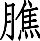
昼夜的变化也像四季一样，有阴有阳
梁冬：“故曰：阴中有阴，阳中有阳”是什么意思?
徐文兵：《金匮真言》第一段讲四季变化，第二段开始讲昼夜变化。昼夜的变化也像四季一样，有阴有阳；再往细分，阴中又有阴，阳中又有阳。比如说，四季里面属阳的是哪个季节？
昼夜的变化也像四季一样，有阴有阳；再往细分，阴中又有阴，阳中又有阳。
梁冬：应该是春夏两季属阳，对不对？
徐文兵：对，春夏逐渐变热，属阳，秋冬属阴。那么，属阳的春夏里面，阳中之阳是哪个？
梁冬：阳肯定就是火嘛，是夏天。
徐文兵：就是夏天，阳里面还有阳。同样一句话，阳里面也有阴。春天也属阳，但是跟夏天比，它又属阴，因为它没有夏天那么热。秋冬属阴，那么哪个更阴？
梁冬：冬天。
徐文兵：冬天更阴，天更冷。跟冬天比，秋天就算阳。这就是阴阳的辩证法，对立统一，无限可分。
梁冬：所以女人之中也有女汉子。
徐文兵：女人之中有阴中之阴，柔情似水、眼波流转、顾盼生辉，眼睛会说话。我们常说水汪汪的大眼睛，现在人都是伸出一只水汪汪的大舌头。
女人之中有阴中之阴，柔情似水、眼波流转、顾盼生辉，眼睛会说话。
梁冬：脾湿严重是吧？
徐文兵：这说明湿气太重，没有肾水。就像人航行在大海里面，周围都是水，但都不能喝。
接着讲阴阳。“故曰”意思就是，有人这么说，或者是过去有人这么说，或者这么说是有原因的。“阴中有阴，阳中有阳”给我们认识昼夜的变化提供了一个方针。
简单地说，一般人把昼夜分成阴阳，白天属阳，晚上属阴。好比靠近赤道的那些国家，只有旱季雨季。可是我们生活在四季分明的地带，比如说中国的北京在古代是属于中原地区，也就是黄河流域这一带。那么，我们要把它再细分，按四季去分，把昼夜也分成四季。
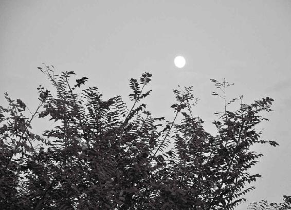
四 季变化有阴阳，昼夜也一样。白天属阳，晚上属阴。
日当正午的时候阳气是最旺的，平旦指凌晨太阳将出还没出的那个时间段
梁冬： “平旦至日中，天之阳，阳中之阳也。” 怎么分呢？
徐文兵：平旦是几点？
梁冬：平旦是太阳出来的时候吧，就是太阳与地平线平齐的时候，对不对？
徐文兵：那这时候太阳是出来还是没出来？
梁冬：这个还得问您，是出到一半？
徐文兵：这就是中庸之道，出一半，谁都不得罪。 “旦”本身就是日头跃出地平线的样子，前面加个“平”，是还没出来的意思。
“旦”本身就是日头跃出地平线的样子，前面加个“平”，是还没出来的意思。
古人说话很精炼、很讲究，只要说“旦”，就是太阳出来了。我们以前搞了一个大的考古工程叫夏商周断代，把周朝公元前718年再往前推，推到了商朝，就是公元前1600年。其中有一个著名的依据，是根据史书上武王伐纣的那一天来推的，叫“天再旦”。
梁冬：什么叫“天再旦”呢？
徐文兵：太阳出了两回。有些人说，这是什么鬼话？太阳怎么能出两回呢？在1997年，太阳就出了两回。太阳刚出来，就是 “旦”，突然那会儿发生了日全食，天一下子就黑了。日全食过后，太阳又出来一遍，这就是“天再旦”。
梁冬：两个旦。
徐文兵：古人根据这个记载往前推，把武王伐纣那天的日子定下来了，多么奇妙啊！我们古代的天文学极其发达。我一直有个心愿，请一个天文学家讲讲中国古代的天文学。
梁冬：那就是天象。
徐文兵：对，讲讲二十八星宿，讲讲对星星的认识。古代人一说“臣夜观天象”，说什么客星入侵、紫微斗数，肯定今天晚上有刺客要进皇宫——把星星的变化和人间、特别是中原地区的变化连在一起。
梁冬：我碰见过一个姓张的老师，他说自己夜观天象二十多年，但是他不肯出来讲。
徐文兵：平旦就是指凌晨，天刚蒙蒙亮，太阳将出还没出的那个时间段，相当于现在什么时间呢？
平旦就是指凌晨，天刚蒙蒙亮，太阳将出还没出的那个时间段。
梁冬：凌晨6点啊。
徐文兵：春夏秋冬不太一样，大家可以参考天安门广场升旗的那个时间，就和太阳在地平线上出来那个时间点是一样的。
梁冬：很多北京的朋友都没有看过升旗，很遗憾，应该去看一下。“平旦至日中，天之阳，阳中之阳也”，这个很明白了。
日中就是午时
徐文兵：日中是几点？
梁冬：是12点吗？
徐文兵：为什么不是12点？
梁冬：你这么一问把我问毛了，你知道吗？很多时候，你的问题很可怕的。
徐文兵：有意思，我在美国考驾照，先考交规。有一道题问：“红灯是什么意思？”是通行、停止、还是左右看？咱都知道是停止，但是出现在考卷上的时候，咱们会觉得这肯定有什么意思，你猜我选择了什么？
梁冬：左右看？
徐文兵：左右看，但是答错了。红灯就是停止嘛！美国社会就是这样，一帮阿甘统治者说了算，你就遵守程序，不要动脑子就行了。
梁冬：对呀！偏偏咱们一帮聪明伶俐的中国人，人家问红灯什么意思，马上就觉得考官特高明，里面定有蹊跷。所以日中就是午时。
这件事说明我们自己内心不够坚定。
徐文兵：聪明但不坚定。古代人认为，日当正午的时候阳气是最旺的，尽管那会儿天气不是最热，我们都知道是下午才最热。但那会儿用日晷，就是用一个杆子测日影，日中的时候是最短的，这个日中相当于二十四节气里面的什么？
日当正午的时候阳气是最旺的。
梁冬：夏至。
徐文兵：所以，我们定二十四小时对应二十四节气很简单，先把哪个节气对应上？
梁冬：冬至或者夏至。
徐文兵：先定夏至，测日影不就完了嘛！
梁冬：对呀，最短的一天嘛。
为什么古代人处决囚犯都是在午时三刻
徐文兵：你立个棍儿放那儿，看看它的影子什么时候最短？那一刻就是正午12点。古人认为正午阳气最旺，影子最短，影子者阴也，阳者最长。所以古代人处决囚犯都是在午时三刻。
古人认为正午阳气最旺，影子最短，影子者阴也，阳者最长。所以古代人处决囚犯都是在午时三刻。
梁冬：午门候斩。
徐文兵：这时候阳气最旺，为什么选择这个时间段？要照顾活人，囚犯无所谓，反正他已经死了，试想一下，如果在半夜杀人，你什么感觉？
梁冬：那很吓人呢。
徐文兵：就把活人吓着了。所以，午时阳气最旺，就是说，人心里那会儿惊恐害怕的情绪最弱，不容易惊恐害怕。如果到了傍晚黄昏杀人，或者半夜杀人，那会儿就会把活人吓得半死。
午时阳气最旺，就是说，人心里那会儿惊恐害怕的情绪最弱，不容易惊恐害怕。如果到了傍晚黄昏杀人，或者半夜杀人，那会儿就会把活人吓得半死。
为什么说“推出午门问斩”
梁冬：故宫前面不是午门吗？常常说“推出午门问斩”嘛！我每次穿过午门的时候，看到那么多人都在午门上走来走去，是不是这个阴气早被这么多人冲掉了？
徐文兵：“推出午门问斩”有这么一个讲究，故宫的门是朝南的，可以接引阳气，因为我们生活在北半球。如果在澳大利亚，午门肯定是冲北的。午门前面那个门叫什么？
梁冬：天安门。
徐文兵：在天安门和午门中间还有一个门。
梁冬：我办公室在那附近，我都不知道。
徐文兵：叫端门。端门午门合起来叫什么？
梁冬：端午。
徐文兵：就叫“端午”。什么叫端午节？很多人都不知道，就知道吃粽子。端是阳气开端，午是阳气升到最高点。端午节是阳气从开端到最高点那个中间，一般端午节都在夏至之前，立夏前后。端门、午门，是这个意思。
“推出午门问斩”，意思是说，犯人的阴魂别不散，这儿阳气这么旺，你赶紧滚蛋。古代杀囚犯是午时三刻问斩，后来中国人莫名其妙地把结婚弄到中午来了。
“推出午门问斩”，意思是说，犯人的阴魂别不散，这儿阳气这么旺，你赶紧滚蛋。古代杀囚犯是午时三刻问斩，后来中国人莫名其妙地把结婚弄到中午来了。
中午结婚还是晚上结婚好
梁冬：古代的时候是中午结婚还是晚上结婚呢？
徐文兵：在古代，通常利用正午阳气最旺的时候处决罪犯，避免犯人死了以后，那些所谓的阴邪负面的东西侵害活人。杀人是个白事儿，结婚是个红事儿、喜事儿。按道理讲，结婚应该什么时候结？
梁冬：如果这样推的话，应该是傍晚结婚，对不对？
徐文兵：你看结婚的婚怎么写？
梁冬：黄昏的“昏”加个“女”。
徐文兵：这不是说人头脑发昏才结婚，是黄昏时候办这个事儿，一拜天地，二拜高堂，夫妻对拜，然后呢？
梁冬：入洞房嘛。
徐文兵：睡觉去了，合欢去了。结婚应该是黄昏举行仪式然后送入洞房。现在不知道怎么莫名其妙改成了中午结婚，而且是12点以前一定要将新娘接到家，怎么闹得跟古代处决囚犯似的？
结婚应该是黄昏举行仪式然后送入洞房。现在不知道怎么莫名其妙改成了中午结婚，而且是12点以前一定要将新娘接到家，怎么闹得跟古代处决囚犯似的？
可是我到广州，发现广州人办喜宴还是在晚上。中国北方唯一保留古代喜宴传统的是天津，天津人结婚还是在晚上。北京现在还流行说，二婚在晚上。
梁冬：主要是现在大部分的新人都不需要入洞房，两三年前就已经把这个事办了。北京是首善之都，应该是保留传统文化比较多的地方吧？
徐文兵：不，它特别容易受外来很多东西的影响。其实北京是个移民城市，你说它根儿有多稳、根儿有多深，还真不如南方江浙一带的根儿深，很多新的东西莫名其妙就流行起来了，结果流行一阵又没了。
谈到“婚”，我们就谈一下古代人对时辰的认识，中午阳气最旺，到了黄昏，阴气就开始起来了，就这么一个顺序。所以《黄帝内经》说“平旦至日中，天之阳，阳中之阳也”，这句话其实是有争议的。从6点到12点，这个相当于四季里面的哪个季节？
梁冬：应该是春季。
徐文兵：春和夏相比，夏天是阳，过了午后，下午最热，属于阳中之阳。可《黄帝内经》说的“阳中之阳”涉及到一个扯不清的问题——是看趋势还是看当时它那个状态？
有句话叫“欺老不欺小”——我宁可跟老家伙干一仗，但不欺负年轻人，因为你这“老棺材瓤子”没几天活头了，可谁知道年轻人将来有多大发展。韩信当年钻过别人的裤裆，可是若干年以后，统领千军万马，横扫天下。从这个角度来说，春天生发的时候，你就觉得它生机勃勃，是阳中之阳；到了下午，尽管它很热，可是它的趋势是太阳西下，是往下掉，从这个角度来讲，《黄帝内经》是对的。
有句话叫“欺老不欺小”——我宁可跟老家伙干一仗，但不欺负年轻人，因为你这“老棺材瓤子”没几天活头了，可谁知道年轻人将来有多大发展。
梁冬：但是这样就弄乱了，按道理说，上午是一天当中的春天，怎么又变成了阳中之阳？
徐文兵：从温度来讲，上午是低的，下午是热的。但从趋势来讲，上午的太阳是往上走的，阳是往上的。常言说“物极必反”，一过正午，太阳就会往下走，尽管它还很热。
从温度来讲，上午是低的，下午是热的。但从趋势来讲，上午的太阳是往上走的，阳是往上的。常言说“物极必反”，一过正午，太阳就会往下走，尽管它还很热。
春天属于阳中之阳，夏天是阳中之阴
梁冬：如果从一年的角度来看，春天算阳中之阳，还是阳中之阴呢？
徐文兵：按《黄帝内经》的理论，按温度趋势来看，春天属于阳中之阳，一年之计在于春。
梁冬： 那夏天是阳中之阴了？
徐文兵：夏天是阳中之阴，它还属阳，所以我们要“冬吃萝卜夏吃姜”，吃点热乎的。
夏天是阳中之阴，它还属阳，所以我们要“冬吃萝卜夏吃姜”，吃点热乎的。
夏至一阴生，过了正午，过了夏至，湿气就起来了。有一个挺著名的故事——“道家挤兑孔子”。很多北京人说“你挤兑我”。“挤兑”是什么意思？
梁冬：你别问了，直接说吧！
徐文兵：你应该知道，到银行提现叫挤兑，挤着去兑换，拿着储存凭据兑换成现金。银行一招挤兑就完蛋了，乘人之危或者是故意刁难人，北京人叫“挤兑”。
乘人之危或者是故意刁难人，北京人叫“挤兑”。
道家挤兑孔子的故事有很多，其中有一个故事叫《两小儿辩日》：话说孔子带着学生周游列国，路上碰见两个小孩，这两个小孩在争论一个话题——太阳什么时候离我们近？
梁冬：这是老庄他们编的故事吧？
徐文兵：不是，清朝从国外请了几个研究天文学的传教士，这些传教士到中国乡下去传道，突然发现那里大字不识的农民对星相都有研究，而且不比他们差。中国人的这种智慧传承有几千年的传统，不要小看。
梁冬：不立文字。
徐文兵：这两个小孩辩日，人家不是讨论分糖你多我少的问题，而是在讨论比国家大事还大的事。其中一个孩子说，早晨太阳离我们近，因为早晨太阳看着最大，当然离得近；中午太阳变小了，所以离得远。这是不是一种论据？
梁冬：对，如果从他的角度来看是这样。
徐文兵：这是从大小看太阳。另一个小孩说不对，早晨冷，中午热，太阳是一个大火炉，它离我们近的时候热，离我们远的时候冷，当然是中午离得近。俩人争论不下，去问孔子。孔子也不知道，只得掩面而逃。
这其实跟我们说的阴阳问题相关，早晨太阳是阳，还是中午太阳是阳？我们还得尊经，就是按《黄帝内经》所讲：早晨6点到12点，太阳趋势是往上升的，尽管温度不是很高，但是那叫阳中之阳。
早晨6点到12点，太阳趋势是往上升的，尽管温度不是很高，但是那叫阳中之阳。
梁冬：哦，有道理！
徐文兵：别把下午的热火朝天当成阳，因为趋势在下降。
别把下午的热火朝天当成阳，因为趋势在下降。
中午至黄昏，自然界的阳气是阳中之阴
梁冬：“日中至黄昏，天之阳，阳中之阴也”，什么意思？
徐文兵：这继承了“平旦至日中，天之阳，阳中之阳也”这句话，从中午12点到黄昏，“月上柳梢头，人约黄昏后”，黄昏大概是晚上6点以后。“月上柳梢头”，就是月出地平线，我们管它叫“阴旦”，太阳出来叫“阳旦”。
“月上柳梢头”，就是月出地平线，我们管它叫“阴旦”，太阳出来叫“阳旦”。
《汤液经法》里面有“小阳旦汤”，就是桂枝汤，还有 “大阳旦汤”，即桂枝加桂汤。古代用的桂枝是肉桂。你别以为是小枝枝杈杈，桂枝要去皮的，如果用现在的小桂枝，把皮剥了就啥都没了。
有“阴旦”就有“阳旦”，有“小阴旦汤”，就有“大阴旦汤”。“小阴旦汤”是黄芩汤，“大阴旦汤”是 “小柴胡汤”。还有青龙白虎汤、大小青龙汤、玄武汤、真武汤、朱雀汤，朱雀汤就是黄连阿胶鸡子黄汤。
梁冬：“鸡子黄”是什么东西？
徐文兵：“鸡子黄”就是鸡蛋黄。鸡蛋里面是分阴阳的，鸡子黄是阴。黄连阿胶鸡子黄汤用来调治心中烦、不得卧等少阴病。
“鸡子黄”就是鸡蛋黄。鸡蛋里面是分阴阳的，鸡子黄是阴。
梁冬：鸡蛋黄属阴，那蛋白就属阳了？
徐文兵：《伤寒论》里面写得很清楚，用黄连阿胶鸡子黄汤，取蛋黄，把蛋清撇掉，把蛋黄搅到“搅令相得”，就是说把药煎好以后放到碗里，温度低于100℃。你不要煮它，煮了就没用了，然后把两个鸡子黄打进黄连、阿胶熬的汤里面，“搅令相得”，然后喝掉。
梁冬：怪不得我的朋友吃鸡蛋的时候不吃蛋黄，光吃蛋白。
徐文兵：那是阴中求阳。我们调治那些心的阴血虚到了极点的人——一伸出舌头血红而且没有舌苔，舌头上沟壑纵横，心碎了不知道多少遍，这叫镜面舌，需要滋补阴血，就用黄连阿胶鸡子黄汤。
我们调治那些心的阴血虚到了极点的人——一伸出舌头血红而且没有舌苔，舌头上沟壑纵横，心碎了不知道多少遍，这叫镜面舌，需要滋补阴血，就用黄连阿胶鸡子黄汤。
梁冬：就用这个方法。
徐文兵：古代的方子都有青龙、白虎、朱雀、玄武，这是伊尹《汤液经法》中的方子，《伤寒论》保留了一部分。 “人约黄昏后”就是从中午12点到晚上6点——天之阳，阳中之阴也。天气很热，但是这时候太阳是西下的，把它归到了“阳中之阴”，这就是《黄帝内经》的认识。
从日落到半夜，自然界的阴气是阴中之阴
“三更灯火五更鸡，正是男儿立志时”
梁冬：“合夜至鸡鸣，天之阴，阴中之阴也”。
徐文兵：“合夜”是什么时候？
梁冬：应该是天黑吧？
徐文兵：这里面落了一句话，我们应该说“夜半”。“鸡鸣”是什么时候？
梁冬：早上两三点钟，三四点钟，要不是半夜？
徐文兵：你把不正常当正常，半夜鸡是不会叫的。古代有一句诗叫“三更灯火五更鸡，正是男儿立志时”。古代人学习，要到三更天——半夜三更（jing）。学到子时12点还不睡，稍微睡一会儿就到了五更天，四五点钟又起来了——“闻鸡起舞”，风雨如晦，鸡鸣不已，这是古人治学的勤奋劲儿。
梁冬：越来越觉得那种“两耳不闻窗外事，一心只读圣贤书”的境界挺好。
徐文兵：挺好，你得心静。现在人是“风声雨声读书声，声声入耳；家事国事天下事，事事关心”，最后搞得一团糟。鸡鸣就是接近平旦的那个时间，而平旦是6点。
现在人是“风声雨声读书声，声声入耳；家事国事天下事，事事关心”，最后搞得一团糟。
有一种神鸟叫朱雀，为什么叫朱雀？它有火热之性，是对应南方的，跟太阳是同步的。春天到了，候鸟来了；太阳往回缩了，冬天来了，候鸟走了。鸟儿每天起得最早，我们还没睡醒，就被鸟叫吵醒了——“春眠不觉晓，处处闻啼鸟”。鸡、鸟属于一类，叫得非常早，早晨太阳还没出来那会儿它们就开始叫了。我们姑且把鸡鸣和平旦放在一块儿。
晚上6点到半夜12点，是阴中之阴
徐文兵：合夜相当于什么时候？
梁冬：夜半子时。
徐文兵：就是说从晚上6点到半夜12点阴开始了，阴开始这一段《黄帝内经》落掉了。阴开始了就是什么？
梁冬：阴中之阳。
徐文兵：是阴中，《黄帝内经》后面说从合夜到鸡鸣，就是从半夜12点到天亮，这叫阴中之阳，然后是什么？
梁冬：鸡鸣至平旦。
徐文兵：那么，从晚上6点到半夜12点是阴中之阴。
梁冬：前面讲到“人约黄昏后”，这个“昏”可能就是黄昏，那个阳中之阴，就是天开始黑了。
徐文兵：阴气始生，然后到半夜12点，这是子时，正对午时的那一段。古代人都叫打更（jing），打更就是“注意火烛、小心盗贼”，值更的人，我们叫更（ge ng）夫。一般叫一更天、二更天。
梁冬：一更是什么时候开始啊？
徐文兵：把半夜三更一对就知道了。半夜三更对子时，11点到凌晨1点是三更天，它正对着的那个时间应该是12点，就是正时。往前推，9点到11点是二更天。一更天是7点到9点。
半夜三更对子时，11点到凌晨1点是三更天，它正对着的那个时间应该是12点，就是正时。往前推，9点到11点是二更天。一更天是7点到9点。
梁冬：我一直以为半夜三更是两三点钟的时候。
徐文兵：半夜就是三更天。四更天是人熟睡的时候，一点到3点，就是我们说的丑时。到五更天鸟叫了，人就该起床了，这是3点到5点。我们说“起五更睡半夜”，什么意思？半夜12点才睡，早晨4点来钟就起了，这说明人很辛苦。但现在我们一般都在二更天睡觉，五更天醒来。古代人大概是5点到7点就点卯上班了，多辛苦啊！
古代人大概是5点到7点就点卯上班了，多辛苦啊！
梁冬：据说古代那些朝廷官员一大早5、6点钟，天还黑着，就在宫门口等着点卯，古代做官也很不容易。
徐文兵：“芙蓉帐暖度春宵，从此君王不早朝”，唐玄宗自打有了杨贵妃以后，起不来床了，累的。
“芙蓉帐暖度春宵，从此君王不早朝”，唐玄宗自打有了杨贵妃以后，起不来床了，累的。
梁冬：不容易。
徐文兵：《黄帝内经》把二十四小时大概分成四块：从平旦到日中、日中到黄昏、黄昏到合夜、合夜又到鸡鸣。我跟很多注家理解不太一样的是：他们把鸡鸣放在半夜三更。看过高玉宝的《我要读书》那个小说和连环画的都知道《半夜鸡叫》的故事。
说有个恶霸地主叫周扒皮，尖酸刻薄，为了逼着农民、长工到地里干活。他半夜起来到鸡窝那儿学鸡叫，然后鸡就开始叫起来了。古代人没有表，作息时间就是根据鸡叫。鸡叫头遍，大家该起床了；鸡叫二遍，洗漱完毕，然后吃点东西，鸡叫三遍就要下地干活了。
梁冬：那时候没有劳动合同法。
徐文兵：没有劳动保障法，所以他们把鸡鸣对到半夜。我认为这书上有错解，漏了一点东西，不能把半夜闹成鸡鸣。
梁冬：回到文章里面，说到“故人亦应之”。
徐文兵：就是说人体阳气的变化是跟着一天二十四小时走的。从早晨6点到中午12点，人的阳气萌动很厉害，是上升趋势。我们经常说“一年之计在于春，一日之计在于晨”。《四气调神大论》里面讲，“春三月，此谓发陈，披发缓行，以使志生”“广步于庭”，让自己早早起来，对一天的工作做一系列的筹划。
人体阳气的变化是跟着一天二十四小时走的。
可是我们现在人，早晨阳气生发的时候还在昏睡。昏睡是什么？
梁冬：收敛阳气？
徐文兵：昏睡是阴，该阳的时候不阳，该阴的时候不阴。该到半夜睡觉，睡不着；该到阳气生发的时候，起不来。现在人就是完全跟自然节奏不同步，而且还是反其道而行之。
在某个时辰，你的心神在关注某个臟腑
徐文兵：关于分二十四小时对应二十四节气，有人发明了“子午流注学说”。现在一些搞中医普及的人，经常提到 “子午流注”，它其实是跟这儿来的。
梁冬：关于这个“子午流注”的情况，可能很多朋友都很关心，其实还有一个“灵龟八法”。
徐文兵： “灵龟八法”是扎针的方法。《黄帝内经》指出一个大概的方向，后面的医家根据这个观察，说一天“阳气”是那样变化的，它也有个节奏。那么，我们人体的阳气，人体对自己身体各个器官臟腑的关注程度也有重点。在某个时辰，你的心神大概在关注某个阳气、某个臟腑，我们总结出一个更细的——二十四小时对应十二臟腑的理论，简单地称之为“子午流注”。
子是子时，午是午时。简单概括这个时辰，我们有十二个时辰，从子时开始，然后到亥时结束。
二十四小时对应十二臟腑的理论，简单地称之为“子午流注”。
每一个时辰都与一种动物有关
徐文兵：这个还对应了十二个动物，这个更有意思，它是观察物候——不同的时间段有不同的动物在活动，然后一一对应了一种动物。
比如说，子时对应的是哪个动物？
梁冬：老鼠。
徐文兵：老鼠是半夜出来活动的。人睡着了，突然“窸窸窣窣”“叽叽喳喳”，老鼠在磨牙，这跟它的属性有关。现在很多搞科研的人，把给人吃的药喂给老鼠吃，你觉得这从哲学上合理吗？
梁冬：应该是有问题的，对吧？
徐文兵：是有大问题的，老鼠跟人的生活节奏、节律是完全相反的。
中药有个巴豆，大家都知道巴豆能让人泻肚子，泻得厉害还可能把人泻死；但是巴豆给老鼠吃了，老鼠拉不出屎来。巴豆另外的一个名字叫肥鼠丸，老鼠偷吃巴豆以后会越吃越胖。如果你拿巴豆喂老鼠，能让老鼠增胖，然后再用到人身上，就把人给拉死了。
中药有个巴豆，大家都知道巴豆能让人泻肚子，泻得厉害还可能把人泻死。但是巴豆给老鼠吃了，老鼠拉不出屎来。如果你拿巴豆喂老鼠，能让老鼠增胖，然后再用到人身上，就把人给拉死了。
梁冬：这个故事太经典了，说明拿老鼠做试验这个事情的荒谬性。
徐文兵：非常荒谬，我见过很多打着科学旗号发展中医的人，他们拿动物做实验。还有一个人做实验制造一种食积症，要体验中医能够消食化积。他给驴不停地吃，最后驴不想吃了，就打驴。我说，你这是在制造食积症还是在制造肝郁？所以很多现代人都不尊重人的差异性。
梁冬：我还听说，有的中医学院在老鼠身上针灸，扎个足三里什么的。
徐文兵：没准还给老鼠治病呢！还有，可以制造相思病。
梁冬：相思病是什么病？
徐文兵：两只老鼠，或两只猴本来是一对配偶。在发情期就让它们隔着一块玻璃，互相看见，但是碰不见，说是要制造情欲不遂的动物模型，然后再用中药，证明中药能调治害了相思病并出现一系列症状的人。
梁冬：这好比夫妻两地分居，给夫妻每人吃点药，就能治相思病，荒唐嘛！太过分了。所以，应之时就是子午流注，对不对？
这好比夫妻两地分居，给夫妻每人吃点药，就能治相思病，荒唐吗？太过分了。
徐文兵：子时代表老鼠出来了。丑时是1点到3点，为什么那会儿对应的是牛呢？牛一般在丑时反刍——就是把胃里面吃进去的草料捯出来，然后放到嘴里去嚼。牛在反刍的时候，叫丑时。下一个呢？
梁冬：寅。
徐文兵：寅对应的是老虎。老虎是猫科动物，早起的鸟儿有虫子吃，老虎在这个时候已经出动了，起得非常早。然后是卯时，对应的是兔。
梁冬：卯时，点卯。
徐文兵：这个时候该上班了，兔子出来了，直奔虎口，一个食肉动物，一个食草动物。“辰”时呢？
梁冬：辰龙。
徐文兵：龙到底是什么东西呢？我个人研究，龙是古代跟鳄鱼有近亲关系的一种冷血动物，披鳞挂甲，它必须等太阳升到一定时候，才出来活动，所以叫辰龙。巳蛇呢，蛇是个冷血动物，足够暖的时候，它才出来活动。到了中午，是午马，辛苦奔波，一日千里的那个马。
梁冬：按道理说，阳气最盛的时候，马应该是更冷才行吧？
徐文兵：为什么更冷？它阳气足啊！
梁冬：龙，蛇，都是因为冷，所以要等到太阳出来。最热的时候，应该对应最冷的动物。
徐文兵：马有阴阳两面，它的奔跑能力、负载能力都挺强，但马的胆子最小。很多年前上演过一部电影叫《青松岭》，里面描写一个钱倌赶车，马路过一棵枯树，“呱”就惊了，古代的“惊”字是（驚），上面是一个尊敬的“敬”，底下是一个“马”， 比如“惊骇”，“骇”字旁边也是个“马”。可见，马的胆子很小，它阴的一面很容易受到惊吓，因为通心。
中午这个时辰，12点是通心的。要养心的人，中午这会儿可以眯一会儿。
中午这个时辰，12点是通心的。要养心的人，中午这会儿可以眯一会儿。
然后就是“未时”，未时对应的是羊。人们都说羊肉热，其实羊奶更热。
羊是对食物非常挑剔的一种动物，所以一般人工圈养成功率不是很高，只好放养。中国人的文化从很大程度上来说，是“羊”文化。我们的很多字都是和“羊”有关的。“美”，美不美？羊大为美；“吉祥”的“祥”，右边是一个“羊”；“善良”的“善”，上面是一个“羊”；义（義）字，上面也是一个“羊”……
梁冬：那“羊”之后呢？
徐文兵：“羊”之后是“申”，对应的就是“猴”了。讲这个不是为了讲十二生肖，而是观察一下物候，各种动物在什么时候活动得比较厉害。时辰跟我们的身体是有关系的，下一步就对应到十二臟了。
酉是鸡，为什么对应鸡呢？黄昏以后鸡就出现了一个问题——鸡醒得早，跟着太阳走；太阳一落山，鸡的眼睛就看不见了，这叫雀盲症。一到酉时，就是到了5点至7点这个时间段，好多鸟儿就赶紧回家了，或者栖息下来，不飞了。为什么不飞了？因为它们看不见了。其实这就是维生素A缺乏症。很多人也会出现这个问题，一到黄昏眼睛就看不见了，赶紧炖点儿猪肝、羊肝儿吃。
酉时后就是“戌狗”。戌时是狗，狗开始守夜。“亥时”是猪，它开始呼呼大睡了。这是观察动物如何随着十二时辰阳气的变化而变。
时辰跟人的臟腑也是对应的。我们先确立一个四季。确立四季，先立两个“至”，冬至和夏至。这俩日子一定，一年就一半儿、一半儿分开了，然后再立两个“分”，春分、秋分。冬至和春分之间，就是立春。
梁冬：所以立春应该是在12点到6点中间吧？
徐文兵： 3点立春。古代的道家都是3点起来修炼、打坐、吐纳、呼吸。
梁冬：所以，很多朋友想追求出家人的生活，这是很不容易的。
徐文兵：那得7点睡。普通人7点还看新闻联播呢，8点还等着看电视连续剧呢！
梁冬：很不容易啊。
徐文兵：立春，针对二十四节气那个时辰，就是凌晨3点。立夏在6点到12点中间，就是上午9点。立秋是下午3点，立冬是下午6点。这个四季都区分好了：春生、夏长、秋收、冬藏！一日之计在于晨！立春那天可能还冷着，不建议早早起来，过了春分的时候你就该早早起来了。
立春，针对二十四节气那个时辰，就是凌晨3点。立夏在6点到12点中间，就是上午9点。立秋是下午3点，立冬是下午6点。这个四季都区分好了：春生、夏长、秋收、冬藏！一日之计在于晨！立春那天可能还冷着，不建议早早起来，过了春分的时候你就该早早起来了。
很多人把自己的身体当成机器了
徐文兵：很多人找我看病以后，改变了一个生活观念，他们原来都是东奔西走、不停地忙着；后来，他们想开了：你忙啥呢？这么忙、这么累，图啥呢？他们发现，原来先前是以妄为常！第一改变了“妄”，第二改变了生活习惯。
很多人找我看病以后，改变了一个生活观念，他们原来都是东奔西走，不停地忙着。后来，他们想开了：你忙啥呢？这么忙、这么累，图啥呢？他们发现，原来先前是以妄为常！第一改变了“妄”，第二改变了生活习惯。
我们很多人是点灯熬油、置之死地而后快——把自己置于危险的境地以后，突然脑子里出现了灵感。有的人还抽着烟，不停地抽，满屋子烟雾缭绕，处于缺氧状态，这种状态导致人到特别危险的时候本能就会被激发，然后会有好多灵感，很亢奋，然后文思泉涌，“哗哗哗”就写。但这是一种不健康的方式，这叫“杀鸡取卵、竭泽而渔”，我建议他们慢慢改一下，试试改成早晨5、6点钟，鸟儿在叫、空气清新的时候，推开窗户换换气，在那会儿写点文章，也会有灵感。
梁冬：有一个技术问题，我看到有一则广告：有一群人深夜的时候很亢奋，上火了，然后来一杯凉茶。深夜很亢奋然后喝凉茶，这样好吗？
徐文兵：这就是雪上加霜、害上加害。夏天，外面很热，然后你灌一杯冰水，外面受热，肚子里边受凉，受两个夹攻，结果中暑了。中暑的表现是又有热又有湿。
我见到很多人心情特亢奋，或是性欲很亢奋的时候会冲个冷水澡。其实那一点儿用都没有。我们都知道，比如说普通的东西着火了，我们拿水给它浇灭了；如果化学试剂着火了，比如汽油着了、柴油着了，或者什么化学燃料、烯料着了，那会儿你越滋水，火越大。怎么办？就拿土埋，或者是拿那种专门灭化学燃料的泡沫，把它覆盖了，隔绝空气。
调治心火或者是性欲的火，应该用一种专门平衡它的热性的东西，而不是靠物理降温。所以，很多人是里面燃烧心火，外面又受着冰水的刺激，让两个邪气共同干掉自己。
梁冬：我觉得这个哲学就是“很多人把自己的身体当成机器了”。因为他把自己的身体当成机器，所以他自然而然就有了机器观念。
徐文兵：简单而粗暴。
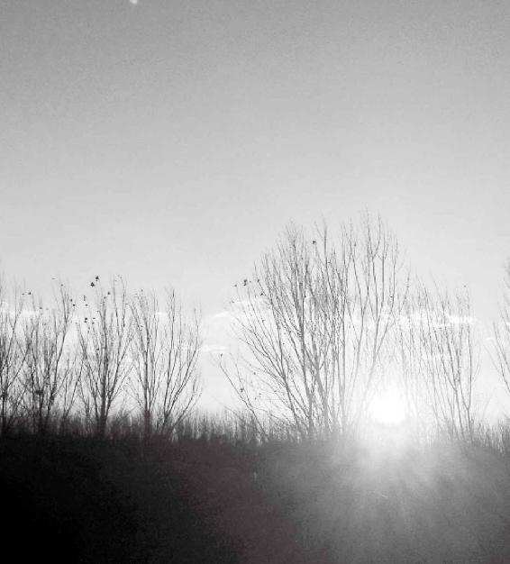
很 多人是自己干掉自己而不自知。
从半夜到清晨，自然界的阴气是阴中之阳
梁冬：“鸡鸣至平旦，天之阴，阴中之阳也。故人亦应之”，是什么意思？
徐文兵：我读的这本《素问》有一个脱漏，在正常的《素问》里边，它把鸡鸣规定成半夜子时，半夜鸡就开始叫了；把合夜对应成黄昏，所以从合夜至鸡鸣，天黑了是阴，这段时间是逐渐走向特别黑暗的阶段，属于阴中之阴。
半夜子时是最黑暗的，但黑暗之中孕育着阳光。冬至一阳生，到半夜之时尽管最黑暗，但阳气也开始生发了，所以黄帝把从半夜到平旦——就是天亮那个阶段——也是黑夜叫作“阴中之阳也”。这是古人对一天二十四小时的一个分类方法。
半夜子时是最黑暗的，但黑暗之中孕育着阳光。叫作“阴中之阳也”。
我们趋炎，古人附势：对阴阳的看法
徐文兵：古人跟我们一般人的认识是不一样的，我们一般用 “天热不热或者冷不冷”来评论阴阳。而古人看趋势，看你将来发展的势头。
我们一般用 “天热不热或者冷不冷”来评论阴阳。而古人看趋势，看你将来发展的势头。
尽管不是很热，但你的势头很旺，我就跟着你走。有个成语叫趋炎附势，我们判断是趋炎：下午热，应该是阳中之阳；上午冷应该是阳中之阴，这其实不对。
古人是附势，看发展的势头，别看上午不是很热，但太阳一直是往上走的，这个是发展势头，属于阳中之阳；虽然下午很热，但是太阳逐渐在往下沉，这就属阳中之阴。
这就好比炒股，炒股票是在大家都入市火爆的时候，有的人就看出要走下坡路了，人家马上就抛了，我们还追着往上赶，接着就被套进去了。借你一双慧眼，你就能看出一个事物的发展势头来，这需要人用心去体会。
梁冬：你觉得中国的股市是阳中之阳，还是阳中之阴呢？
徐文兵：作为医生来讲，我觉得应该恪守职业道德，就是看病时心情一定要平静。如果你去炒股，你的心情跟股市一样起伏跌宕的话，我觉得就不可能有一种平静、安详、平和的心去体会病人的脉搏。
作为医生来讲，我觉得应该恪守职业道德，就是看病时心情一定要平静。
梁冬：很多人都认为炒股是生活职业之外的事情，算是业余爱好，其实，当你真正投身股市之后，就没有那么从容了。
人的身体，外部为阳，内部为阴
什么叫和谐
梁冬：接下来，我们讲 “夫言人之阴阳，则外为阳，内为阴”。
徐文兵：《金匮真言论》第二部分的第一段讲的是怎么划分昼夜的阴阳，我们前面也讲了“子午流注”，就是说从子时一直到午时，然后再到亥时。依据这段话，后世发展出了“子午流注”理论，它把各个时辰对应的臟腑，都按经络——我们后天之气流注的顺序，全部给贯穿起来。比如说，从3点到5点是属于肺，5点到7点又属于大肠，7点到9点属于胃，这就是我们的经络理论对《黄帝内经》的进一步发明。
接下来，我们讲第二部分的第二段，开始划分人的阴阳。
知道四季的阴阳和昼夜的阴阳的目的，是让你用自己的臟腑经络气血去应和天地的节奏和变化，就两个字：一个是要“和”，另一个要“谐”。
知道四季的阴阳和昼夜的阴阳的目的，是让你用自己的臟腑经络气血去应和天地的节奏和变化，就两个字：一个是要“和”，另一个要“谐”。
“谐”就是一样，共振频率是一样的。天亮了你出来，日出而作；天黑了你休息，这叫“谐”。
什么叫“和”呢？就是天气太冷的时候，你要去穿棉衣、睡火炕，不要冻坏了；夏天太热了，你稍微在树荫底下坐会儿，扇扇扇子，不要让自己热得中暑，这叫“和”。“和”是不同，“谐”是同。
快到崩溃的时候一定要“和”，往极点走的时候一定要“谐”
梁冬：什么时候应该“和”，什么时候应该“谐”呢？
徐文兵：要掌握那个“度”，所以中医不好学，原因就在这儿呢。很多人问路说：你告我从哪儿走吧，我应该往哪个方向走？那我就问了，你是采取什么方式？开车来、还是坐地铁来，或者坐直升飞机来？另外，你什么时间来？赶上高峰，你走的路线和平常的路线就不一样。
所以我们经常说：“道可道，非常道”，意思是说，你不给我具体条件，我就没法给你指一个方向。但是还是有一个规律可循，你先知道天地的阴阳、昼夜的阴阳，然后知道你的阴阳，知道你的限度，这样你就知道什么时候去“和”，什么时候去“谐”。
你先知道天地的阴阳、昼夜的阴阳，然后知道你的阴阳，知道你的限度，这样你就知道什么时候去“和”，什么时候去“谐”。
梁冬：可不可以这样理解呢？在限度比较低的方面就先“谐”，“谐”不了就“和”。
徐文兵：快到崩溃的时候一定要“和”，在往极点走的时候一定要“谐”。好比夫妻打架打到快离婚的时候，肯定一个人得服软，你如果还是“谐”的话，两个人都那么硬，你硬我也硬，那就只能崩盘了。你硬的时候我软一下，我回头再收拾你，敌进我退，敌疲我扰，这叫“和”。
梁冬：这就是敌人是弹簧，你弱他就强。
徐文兵：这个度的把握，就是为人处事的聪明和智慧，包括养生保健。如果你想维持身体健康，也是维持一个系统，要让它发挥到极致，这是往那个极点走，这会儿一定要“谐”。冬练三九、夏练三伏，这是年轻的时候干的事儿，快到极点、快崩溃的时候，一定要“和”了。知道退让、知道妥协，人就活出来了。
冬练三九、夏练三伏，这是年轻的时候干的事儿，快到极点、快崩溃的时候，一定要“和”了。知道退让、知道妥协，人就活出来了。
什么叫辅佐
徐文兵：我们经常说一句话叫“辅佐”，你说过：辅佐中国文化发扬光大。这个“辅佐”用得很好。中国文化有好的一面，我就顺着他走，这叫辅一把；对于糟粕的一面，压抑人性、为统治者服务的一面，我就要提出批判，要抛弃它或者批判它，这叫佐。
中国文化有好的一面，我就顺着他走，这叫辅一把。对于糟粕的一面，压抑人性、为统治者服务的一面，我就要提出批判，要抛弃它或者批判它，这叫佐。
佐就是不同，我们经常说意见相佐，炖肉的时候加点儿佐料。什么叫佐料？肉是寒性的，我就加点热性的，这叫佐料。我们现在不说文言文，都说白话文。一说白话文，就把古代文言文那种反义词也连在一块儿，变成一个同义词了。我们经常说，你怎么这么不舍得？本来舍和得是反义词，现在变成了一个词叫“舍”。
佐就是不同，我们经常说意见相佐，炖肉的时候加点儿佐料。什么叫佐料？肉是寒性的，我就加点热性的，这叫佐料。
梁冬：中国文化的文字很有意思，辅佐，舍得，全都是相反的意思。
徐文兵：我们经常说：你辅佐一下他，你是辅他一下，还是佐他一下？古代人讲：这个人有王佐之才。什么叫王佐之才？敢揭龙鳞、敢触怒龙颜，敢给皇帝提反对意见的那个人叫有“王佐之才”。只会拍马屁，阿谀奉承，皇上说往东就往东，皇上说往西就往西，那叫光辅没佐。我们说和谐社会，和谐社会难道就是和吗？或者难道都是谐吗？该和的时候要和、该谐的时候要谐。
和谐社会难道就是和吗？或者难道都是谐吗？该和的时候要和，该谐的时候要谐。
梁冬：这个辅和佐、和与谐、舍与得都是不一样的。所以，在这样的一个过程当中，我们就发现了中国文字是怎样被改造成为这样一种情形的。你觉得它后面的原因是什么呢？
徐文兵：把繁体字简化成现在的简化字是为了扫盲。扫盲倒是让大家都认得字了，可是大家都离开繁体字原来那个样，大家都不识字了。这没办法。
我觉得，把基础打实了，大家先扫了盲，然后认了字，再一步步发展。这样可能地基打牢了，以后还能发展。但是中国文化有一个特点，它是早熟而且有特别超人的智慧。我们不能把这些优秀的金字塔尖的东西砍掉，为了寻求那种地基的平衡。
中国文化有一个特点，它是早熟而且特别有超人的智慧。
阴阳学就是关系
梁冬：继续往下讲，“夫言人之阴阳，则外为阳，内为阴。”
徐文兵：这开始触及到中医最核心的一个理论——阴阳理论。记得我们上中医学院的时候，学中医基础就会讲阴阳理论。
当时，我问一个老师，为什么要学阴阳理论？另外，我还问了一个问题，阴阳和矛盾是什么关系？我们学过毛主席的《矛盾论》和《实践论》。这个阴阳和矛盾有什么区别？包括古代人学中医也会讲阴阳。但是总有一个问题就是，老师不告诉你为什么要讲阴阳。
为什么要学阴阳理论？阴阳和矛盾是什么关系？
梁冬：是不是老师也不知道呢？
徐文兵：老师可能知道，但你没下好功夫，没到点拨你的时候，人家就不告诉你，姑且这么理解。
如果没有交换，关系就不成立
徐文兵：我们讲《上古天真论》和《四气调神论》，其实讲的是人和天地的关系。把天地去掉，我们是在讲一种关系，就是你来到这个世界上，你活在这个世界上，跟你生存的环境肯定有关系。什么叫关系？
我们讲《上古天真论》和《四气调神论》，其实讲的是人和天地的关系。
梁冬：relationship！
徐文兵：我觉得关系姑且这么理解：就是一种物质、能量和信息的交换。如果没有这个交换，关系就不成立。
比如说，拉关系、走后门得拎两瓶酒、拎条烟，这叫“我拿物质去交换”；
我穷得没有烟、没有酒，但是我还想拉点关系，怎么办？我上你们家，给你们家扫院子、换煤气罐。好多人靠这种热忱的服务，也获得了领导的青睐，最后也得到了他想要的东西。这叫“奉献能量”，我给你干活——把你家院子扫干净、把你的皮鞋擦得倍儿亮。
拍马屁是信息交换。我要说好话“你怎么长这么帅呀”“你这个事怎么干得这么漂亮啊”，这叫信息的交换。
所以，人和人想发生关系，离开这三个，则不成立。
我们想研究错综复杂的关系，就像研究数字一样，要把它想象得简单一点儿，把所有的关系归结成最简单的一种模型——我想用一种抽象的东西概括所有的关系，怎么办？你得找一个东西，那么最基本的关系是什么？男女关系。
归根到底就是说，不管和自然界也好，人和人之间也好，想发生这种物质能量和信息的交换，最起码要具备两个元素，我们就把它称阴、阳。
不管和自然界也好，人和人之间也好，想发生这种物质能量和信息的交换，最起码要具备两个元素，我们就把它称阴、阳。
中国也用阴阳代指男、女关系或者性行为。用一个抽象的东西，概括了很多具体形象的东西。比如我们说1，你给我拿出个1来。你伸出一个指头，我说那不是1，那是一个指头。到底1是什么？1就是给人灌输的一个抽象概念，它虽然不代表具体的东西，但是它涵盖了你可以代指的任何东西——一个苹果、一个梨……
其实，阴阳是我们中国人的智慧符号，代表了人和自然界、人与人、身体内部各个臟器之间存在的错综复杂的关系。
阴阳是我们中国人的智慧符号，代表了人和自然界、人与人、身体内部各个臟器之间存在的错综复杂的关系。
我想把复杂的东西简单化，怎么办？我创立了一个关系学，这个最基本的关系学叫做阴阳，就是一个男一个女，一个向阳面的，一个向阴面的，一个空的一个实的。
五行是一种极端抽象的，但是无所不包容的东西
徐文兵：那么，我想为更复杂一点儿的东西做解释，就是解释人和自然、人与人之间的更多关系的时候，我又发展出来一个五行。五行学说说的也是关系。金、木、水、火、土相生相克，但它们绝不代表具体的事或者物。
五行学说说的也是关系。金、木、水、火、土相生相克，但它们绝不代表具体的事或者物。
我们经常说，木就是树，金就是铁，其实不是。五行是一种极端抽象的，但是无所不包容的东西，可以解决更为复杂的关系。当这五个还不够的时候，那就有了《易经》的八卦，导出六十四卦推广无穷。
道家的文化是研究关系的文化。阴阳学说就是把所有的复杂的东西简单化。所以，一个好的老师是把复杂的问题讲简单了。当一件简单的事别人越讲你觉得越复杂的时候，你就得想想，这个人是不是在“以其昏昏，想使人昭昭”。
中医学、阴阳学，都是关系学。现在医学研究生命，研究到细胞、基因、核糖核酸RNA、脱氧核糖核酸DNA，十分细微。但是能不能高屋建瓴，有一种把握大局的方向，概括人到底怎么了。这个人病了，能不能简单地告诉我原因？可以，答案就是：阴阳不协调。
中医学、阴阳学，都是关系学。
梁冬：深刻。但是会不会有人说这个东西太笼统？
徐文兵：现在需要的就是笼统。因为现在很多东西走到了死胡同，“只见树木不见森林”，只讲技术不讲方向。而中医学千百年来一直是高屋建瓴，站在一种宏观的高度，指示人们正确的方向。
领袖是把复杂的事情简单化的人
梁冬：记得，有一次我在EMBA课堂上，有位老师讲的一句话非常好，他说：管理者是把简单的事情复杂化的人，领袖是把复杂的事情简单化的人。
管理者是把简单的事情复杂化的人，领袖是把复杂的事情简单化的人。
徐文兵：为什么叫领袖？有的人是可以做宰相、做皇上的，有的人只能去做师爷，做刀笔吏，这就是他们着眼的角度不一样。古人有句话叫“刀笔吏不可以做公卿”，还有句话叫“宰相肚里能撑船”。宰相是把握宏观大局的人，可以容下一些是是非非的小事。可是刀笔吏是拘泥于细节，抠着字眼不放的人，做不成大事。但是具体事情让他去办，你放心。
宰相是把握宏观大局的人，可以容下一些是是非非的小事。可是刀笔吏是拘泥于细节，抠着字眼不放的人，做不成大事。但是具体事情让他去办，你放心。人得找对自己的位置。
人得找对自己的位置。如果你作为医生，却只有刀笔吏的眼光，患者说我胃疼，你就给人家看胃。那很多心臟病患者的早期症状都是以胃疼来表现的。然后，你给患者开点颠茄、三九胃泰、胃乃安，让他回去吃，当晚患者就会心臟病发作。
如果是一个高屋建瓴的大夫就能从患者胃疼的局部探察全身，发现患者有胸痹（中医叫胸痹）——心臟病早期的症状。如果患者有这种心气、心阳不足的问题，又赶上了冬至的节气，心的阳气更受压抑，这个病有可能在阴中之阴，半夜子时之前发作。所以，患者千万不能子时上厕所，不能在厕所那个最阴的地方。
可见，中医大夫是一个宏观的战略家。以前说“不为良相，则为良医”，相就是宰相，有宏观战略眼光的人，绝对不是具体的技术工人。
人不是零件组成的
徐文兵：补充个例子， “只见树木，不见森林”，看病容易出现一个问题——把患部当成零件，忘记了这个零件跟人的全身有密切的关系。
我看过一个病人，是个中年妇女，乳腺癌手术后她就用一种药抑制，防止乳腺癌复发。但是这个药的副作用会让子宫粘膜充血，后来她的子宫粘膜里面长了很多子宫肌瘤。她吃完这个药，医院开药大夫做回访，对她说，我们只管乳腺。这是一个大夫义正辞严说出来的话。而且这个病人还告诉我，给她吃这个药是一个大夫，当年给她做手术的是另外一个大夫。
四年后，医院有一个癌症的存活期的回访。回访时大夫说：“你现在怎么样？”她说：“我现在还活着呢，但是我的子宫上长了很多肌瘤，包括宫颈外面都长出来了囊肿。”大夫说：“你不要跟我说这个，我只问你乳腺。”这都是实实在在的例子。
如果一个医生给人看病，只看局部，那么作为整体的人，她的感受、她的生存质量，谁考虑过？
如果一个医生给人看病，只看局部，那么作为整体的人，她的感受、她的生存质量，谁考虑过？
以前有句话叫党指挥枪。为什么叫党指挥枪？党在政治的高度上决定这些军事家们，就是职业军人们的枪往哪个方向打，什么时候该打，什么时候不该打。军阀就没有这个战略眼光，没有代表全人民利益的高度。他们只不过是看哪有钱、哪有地盘就冲上去。
所以，我认为医生一定要有哲学素养，医生一定要学哲学，一定要学中医。因为中医就是在战略高度上，把患者当人，而不是把患者当作机器——可以分拆、分解。中医不会把患者当动物，不会离开天地这个系统把人孤立出来去研究。
我认为医生一定要有哲学素养，医生一定要学哲学，一定要学中医。
梁冬：很多人以为人和天没有联系，没有一根绳子联系，就是没有联系的。手机还没天线呢，不是一样可以联系！
很多人以为人和天没有联系，没有一根绳子联系，就是没有联系的。手机还没天线呢，不是一样可以联系。
徐文兵：这就叫关系。有人只看见物质，你给我来点什么烟和酒，没有看到能量有交换、没有看到信息有交换、没有看到一个眼神都代表着一种交换。
有人只看见物质，你给我来点什么烟和酒，没有看到能量有交换，没有看到信息有交换，没有看到一个眼神都代表着一种交换。
梁冬：你说到这个地方的时候，我想起不少人以为自己是一个科学分子，其实他是站在牛顿物理学的基础上来看待科学的。牛顿的这个假设，是事物可以被拆分成若干部分的。这其实是经典牛顿物理学的一个观念。这种观念是科学的——我们称之为最初层次。
男人身体有个地方应该凉，女人身体有个地方应该热
梁冬：接着往下讲， “夫言人之阴阳，则外为阳，内为阴。”
徐文兵：这就开始划分人的阴阳了。我们首先看到的人是一个肉身，就是所谓的“形而下者谓之器”。大家都能看见、摸得到的，我们先分它。
肉身暴露在外的部分我们称为“阳”，藏在里边的就是“阴”。
肉身暴露在外的部分我们称为“阳”，藏在里边的就是“阴”。
梁冬：像舌头这种可伸出来又可放进去的，是“阳”还是“阴”呢？
徐文兵：“阴中之阳”！实际上，阴阳无限可分。比如阴阳图，一边是黑，一边是白。但白的里面又有黑的，黑的里面又有白的。
男人属阳，应该是热的，但是男人身上有一个地方特凉，而且千万不能热了，热了就会坏事儿，这就叫阳中有阴；
女人属阴，应该是寒的，但女人身上有个地方特别热。那个地方一凉，例假不来了，胎儿存不住，就要流产。
学会了阴阳，人可能就会活得更轻松一点儿
徐文兵：所以，学会了阴阳，就学会了辩证法，就学会了不钻牛角尖的思维，学会了变通，人可能就会活得更轻松一点儿。这就是我们讲的“人之阴阳”。
学会了阴阳，就学会了辩证法，就学会了不钻牛角尖的思维，学会了变通，人可能就会活得更轻松一点儿。这就是我们讲的“人之阴阳”。
这个阴阳，简单来分就是说，朝着太阳的一面，能让太阳照着就是“阳”，太阳照不着的阴面就是“阴”。
人的背为阳，腹为阴
人的抱负是从哪里来的
梁冬：下面接着讲“言人身之阴阳，则背为阳，腹为阴。”
徐文兵：身是什么？
梁冬：“身”和“体”不一样吧？
徐文兵：“身”是身躯，身躯就是我们的腔子。身躯的阴阳怎么分呢？书上说了“背为阳，腹为阴”。
为什么呢？当你四肢着地的时候，后背是冲着太阳的，腹部是背着太阳的。而且从抗击打能力来讲，背上的抗击打能力强，胸腹的抗击打能力差。还有，老子有一句话：万物负阴抱阳，冲气以为和。
梁冬：这种话很深刻，什么意思啊？
徐文兵：“负”是什么意思？我们经常说“抱负”——这人很有抱负！从哪儿来的？从负阴抱阳来的。这人气魄有多大，简直就是头顶蓝天，脚踩大地。那种感觉叫“抱负”，这是从《道德经》来的。
我们经常说“抱负”——这人很有抱负！从哪儿来的？从负阴抱阳来的。这人气魄有多大，简直就是头顶蓝天，脚踩大地。那种感觉叫“抱负”，这是从《道德经》来的。
“负阴抱阳”是什么意思
徐文兵：负，是背负的意思，就是你的后背好像背着一袋东西，背的是阴，怀抱着阳。这人是什么姿势？面南背北。
我们在北半球，太阳是在南面，这个人站桩的时候是什么姿势？
梁冬：面南背北。
徐文兵：皇帝都是面南背北——背负着北面，面朝着南面，这个姿势是养生的最佳姿势。这简直就像电池放电，阴极阳极一对。你的背是阳，接的是阴；你的胸腹是阴，接的是阳，所以这是一个站立、站桩的姿势——负阴抱阳。
皇帝都是面南背北——背负着北面，面朝着南面，这个姿势是养生的最佳姿势。
在这种状态下，浩然正气就会动起来。
梁冬：这叫做“冲气以为和”。
徐文兵：如果是面朝着北背着南，就叫不和——阴对着阴。
臟属阴，腑属阳
内臟也分阴阳
梁冬：讲到人身体的阴和阳。一般人都知道外面是阳里面是阴，舌头属于阴中之阳，也知道“背上是阳，腹部是阴”。但很多人并不知道肚子里的臟腑也分阴阳。所以，“言人身之臟腑中阴阳，则臟者为阴，腑者为阳”。
徐文兵：或者念成 “臟”（cang）者为阴，腑者为阳。“臟”是个多音字。封藏在里面，我们念作臟（cang），单独把它当成一个名词来念，我们管它叫臟（zang），五臟——肝、心、脾、肺、肾，全不能拿出来玩，你摸不着。
很多人自个儿吃的不合适想吐，一抠嗓子眼儿，“哗”，吐出来了。证明有些臟器你是能摸得着的，包括现在做内窥镜检查，做胃镜，伸根管子进去能看见胃，现在还做些内窥镜的手术。
你能看得见，说明它还有阳的一面。这种器官我们称之为“腑”。什么叫腑呢？就是盖一座房子，里面能放东西，开开门能进去，这叫“腑”；藏在深宅大院里面，没门可走，也进不去的那个叫“臟”。中医把五臟六腑也分成两组，能摸得着、看得见的，跟外边相通的叫腑。腑一共有六个。
盖一座房子，里面能放东西，开开门能进去，这叫“腑”。藏在深宅大院里面，没门可走，也进不去的那个叫“臟”。
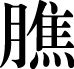
六腑皆为阳。”五臟是阴，六腑是阳
什么叫三
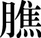
徐文兵：我们先说臟。肝、心、脾、肺、肾五臟皆为阴。 “心”指的是心胞，肉心，就是我们现在解剖学上说的那个心，它是一个有形的器。
其实，古代人说的 “心”泛指人的心理活动，包括心神、情志、情绪、情感、思想。
古代人说的 “心”泛指人的心理活动，包括心神、情志、情绪、情感、思想。
这叫“五臓为阴”。下边儿是胆、胃、大肠、小肠、膀胱、三
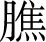
。梁冬：“三”是什么东西？三就是胆、胃、大肠、小肠、膀胱吗？按中医观点，三六腑皆为阳，阴中之阳嘛。
徐文兵：我师从的门派有一位大的医家，也是位大的道家，叫周潜川。他是集道家和中医，还有一些其他方面学问之大成的一个人。他把《内经》的很多理论验证并且发展了。他认为三就是我们的胰腺。《黄帝内经》里面就缺少两个器官，胰腺没有，男人的阳中之阴也没有。但是肯定有代指它们的东西，胰腺就是三。
梁冬：那男人的阳中之阴是用哪个代指？
徐文兵：我们也有考证，《黄帝内经》里有一句话叫“凡十一臟皆取决于胆”。很多人奇怪，五臟六腑的六腑里有个胆。中医还有一个“奇恒之腑”。
奇恒之腑里面包括脑、髓、骨、脉、胆、女子胞(子宫、卵巢)，也有一个胆，怎么回事儿？其实这个“胆”不是那个胆，按陕西话说就是“蛋”(睾丸)。学生记错了，记成了“胆”，这是题外话。按照周潜川老师的理论，三就是指人的胰腺。胰腺既是一个内分泌器官，又是一个外分泌器官。
什么叫内分泌，什么叫外分泌
梁冬：到底什么叫内分泌，什么叫外分泌？
徐文兵：内分泌就是说，把激素直接释放到血液里，也就是臓里，不往外排。
比如说肾上腺素，肾上腺或者脑垂体、甲状腺，它直接分泌到血里面。分泌到血里面的就是胰岛素，是降血糖的。但是胰腺又是个外分泌器官，它把分泌出来的酶，直接释放到我们的腑里面——消化道里面、十二指肠里面、小肠里面。它分泌胰腺淀粉酶、胰腺脂肪酶，或者是蛋白酶去消化食物，所以，胰腺像一个门轴儿一样，可以往里开，也可以往外开，我们称它为少阳，少阳处于半表半里。
胰腺像一个门轴儿一样，可以往里开，也可以往外开，我们称它为少阳，少阳处于半表半里。
有糖尿病，是三出问题了
梁冬：糖尿病，跟胰腺是有关的吧？
徐文兵：有糖尿病是三出问题了。我们管糖尿病叫“三消”——上、中、下三消。上消表现出来是消渴，就是说能吃能喝，食欲亢盛；中消呢，就是吃了就化，特别容易饥，消谷善饥。刚吃了一顿饭，但很快又饿了；下消就是兜不住尿，吃了就拉，人会变得特别消瘦。
现代医学说糖尿病是胰岛素的问题，中医说，是三——上、中、下三出问题了，这其实是对得上号儿的。
梁冬：通常调治三的病有什么样的心法和手法呢？
徐文兵：三我讲过了，就是当你胰腺的消化脂肪的这些酶出问题的时候，你就要从外面去补充。
我们以前洗手用的叫胰子，其实就是动物的胰臟，它能够化油腻，所以胰腺出了问题，要有意识地去以臟补臟，用一些动物的臟器去调治。还有一点，三对应的时辰是猪的时辰，9点到11点。所以，胰腺不好、得糖尿病的人最好在9点以前睡觉。
所以，胰腺不好、得糖尿病的人最好在9点以前睡觉。
梁冬：看完《新闻联播》，充其量再看一下《焦点访谈》，就差不多该睡了。我们讲到胆、胃、大肠、小肠、膀胱、三，六腑皆为阳。那么。阴阳图中空心的部分是什么？
看完《新闻联播》，充其量再看一下《焦点访谈》，就差不多该睡了。
徐文兵：空心的部分是腑，是阳。我们叫六腑是“传化物而不藏”，就是吃进去东西，如果留在那里就变成实心了，本来是阳却变成阴了。六腑像一个传送带，是对外开放的，先接纳进来然后排出去，有营养的留下来，没用的或者是没营养的排出去，这是六腑的功能，我们叫更虚更实。比如说，胃实的时候，小肠是空的，等胃把这个实物磨成乳糜传到小肠以后，胃就空了，小肠便实了。胃总是保持这种虚位以待，然后传送下去的状态，我们管这种状态叫运化！
梁冬：所以说，虚怀若谷是阳气很足的表现？
徐文兵：虚怀若谷是谈到心理的一种层次了，就是说你能接纳不同的意见，能接受更新的信息，不是我满了，就抗拒一切。很多人是带着很重的偏见去学中医的，这就像茶杯里面倒满了水，你想再往里倒，就不可能了，除非你先倒出一部分。
很多人是带着很重的偏见去学中医的，这就像茶杯里面倒满了水，你想再往里倒，就不可能了，除非你先倒出一部分。
我们管六腑的运化功能叫阳。运其实就是指食物从吃进来到排出去的过程。如果一个人体内阳气足，就会运得很好，但是现在很多人吃进去的东西不运。不运的原因，一个是阴太过，吃得太多；另外一个原因就是阳气不足，六腑的肌肉收缩弹性太弱了。
太极拳的本意是恢复我们的本能
梁冬：有一个朋友曾经跟我说，太极拳的本质其实就是通过身体的晃动，让自己的内臟产生摩擦。
徐文兵：太极拳的本意是忘我，忘掉后天赋予你的畸形、刻意、强迫的我，恢复到你的本能，本能会让你动。
梁冬：为什么太极拳是这个样子的呢？
太极拳的本意是忘我，忘掉后天赋予你的畸形、刻意、强迫的我，恢复到你的本能，本能会让你动。
徐文兵：太极拳、形意拳，包括八卦掌，很多内家拳在打拳之前，第一件事叫练功。听说过一句话没有？练武不练功，到老一场空。
什么叫练功？练功实际上就是把气搞顺了。练功就是先蓄气，先把气蓄起来，有了本钱，然后再把气运到它该去的地方。现在人都是花拳绣腿、有形无气、打架子，打着打着就断气了。所有的道家的内家拳或者中医，都要练气的。
练功就是先蓄气，先把气蓄起来，有了本钱，然后再把气运到它该去的地方。
臟腑也要各安天命，各守本分
梁冬：肝、心、脾、肺、肾，五臟皆为阴。
徐文兵：阴有一个说法，也是《黄帝内经》说的：臟者，藏精气而不泻也。腑者，传化物而不藏也。这就是说，各归其位。
我经常给学生讲，别走错了厕所。男人进男厕所，女人进女厕所。你是臟，就要做符合臟的本性的事；你是腑，就去做符合腑的本性的事。这叫各安天命、各守本分。如果是臟在运、在化，在传化物而不藏，这个人就是在漏精、在失血。本来应该是藏精气而不泻。所以，人流血、流汗、遗精，都是将本来应该藏的精气给泻掉了。
人流血、流汗、遗精，都是将本来应该藏的精气给泻掉了。
有网友问我，徐大夫，你对献血怎么看？我说，献血救人一命，胜造七级浮屠。但是，很多打着某某专家幌子的人，说献血没有害处，而且还能促进造血细胞的分泌——越献血、血越多。这就是灭绝人性，睁着眼睛说瞎话了。那献血的人就成犯贱了，血多得没地方放了，每个月抽它200、400毫升的。
献血救人一命，胜造七级浮屠。但是，很多打着某某专家幌子的人，说献血没有害处，而且还能促进造血细胞的分泌——越献血，血越多。这就是灭绝人性，睁着眼睛说瞎话了。
要知道，血都是肾精所化，本来在血管里流动，外界强行粗暴地插进来一个针头管子把血抽走，这其实就是在抽走献血者的精气。
梁冬：女性一辈子比男性献血献的多，不管是有意无意的，但为什么女性的平均年龄要比男性高？
徐文兵：女性出血的那地方正好是阴中之阳，是孕育胎儿的地方，是最热的。要知道，女性子宫一受寒，她的月经就不来，或者就闭经了，或者就会痛经，那儿就寒住了。
这就是各安其位、各司其职，它从该出血的地方出血，那是正常的。
该藏精的地方，不要让它漏；该传化物，要让它漏
徐文兵：我碰到过一个中医大夫，他有个脊髓漏的毛病。什么是脊髓漏？我们身体后面有个脊柱，而他天生出来个漏管。这种人只要是身体一弱，或是出现一种病痛，就从那儿开始流脓。这个大夫说，你们都有六腑，我有七腑，我还有漏管，其实他是在漏精。
这是我小时候听他说的，等我长大以后，就觉得好像不对——您漏的是精，那是不该漏的地方！后来这个人很短命，死的时候体重就剩下四五十斤。
所以，该藏精的地方，你不要让它漏；该传化物，要让它漏。
该藏精的地方，你不要让它漏；该传化物，要让它漏。
很多人便秘，拉不出屎、尿不出尿，这都是六腑没有阳性了，没有传化之性了；很多人漏精，该藏精气却漏掉了，比如女人变成男人了，太张狂、太张扬。女人变成男人不好，男人变成女人也不好。
很多人便秘，拉不出屎、尿不出尿，这都是六腑没有阳性了，没有传化之性了。
心胞经比较弱的人对生死之事特别敏感
梁冬：咱们这个社会多元化，大家都可以朝着自己认可的方向发展。
徐文兵：各从其欲，皆得所愿。
梁冬：就像电影《入殓师》里面的一个镜头，主角表面是个女孩子，其实是个男孩子，但他想做个女孩子，所以各随其愿。
徐文兵：那个电影我看了，因为我从小对生死之事特别敏感，属于心胞经比较弱的人。小时候，我爸骑车带我路过花圈店，我都不敢睁眼，就那么敏感，所以谈不上生而神灵，是生而敏感。后来在大学一年级时上解剖课，我摸着泡在福尔马林里面那些尸体，把自己那种“见了死人或者死尸就害怕”的心理纠正过来了。
看《入殓师》的时候，又唤醒我当年上解剖课的感觉。影片中有个情节是主角装殓了一个腐败的尸体，回家后，他老婆正好把鸡切好了，肉剁好了，准备涮火锅，他看后一下就吐了。其实那部电影非常好，揭示了人性。孔子说：“未知生，焉知死”。其实这部电影是拿死人来说活人的事。任何国家都有大师，能拍出这样电影的人，绝对不是拍感官刺激的，让人看完以后没想法。反正看完这部电影以后，能让你想到很多。
肝、心、脾、肺、肾之间是相生的关系
梁冬：五臟皆为阴，它们有顺序吗？为什么是肝、心、脾、肺、肾呢？
徐文兵：对应木、火、土、金、水，它们是相生的关系。记得小时候跟我妈学中医，我妈告诉我，谈五臟中一定要把肝放在第一位，因为它代表春天、春生；而一般人都把心放在第一位。
记得小时候跟我妈学中医，我妈告诉我，五臟中一定要把肝放在第一位，因为它代表春天、春生。
梁冬：再次说明微言大义。古代的人，在任何一个地方，说话都有讲究。
徐文兵：孙悟空的老师敲孙悟空脑袋三下，孙悟空就知道：半夜三更子时师傅要传我道，就去了。我们被人敲三下，只知道疼得不行。
梁冬：就像钱超尘老先生讲的项背强（ji`ng）几几，很多人叫强sh$ sh$。
徐文兵：我们上学的时候是念强sh$ sh$的。
梁冬：前段时间请他来做《伤寒论》这个版本，他说，这个字不念j~，也不念sh$，而是念j@n，他把几十个版本的《伤寒论》对照之后得出结论，认为这才能解释项和背紧张的那种感觉。
徐文兵：真正研究中医的人，研究的范围包括古医文、汉字，在这方面，钱老是一个大家。
真正研究中医的人，研究的范围包括医古文、汉字。
膀胱经是全身最重要的一条“排毒经”
梁冬：我们讲到，肝、心、脾、肺、肾是为阴，胆、胃、大肠、小肠、膀胱、三、六腑皆为阳。六个腑就是胆、胃、大肠、小肠、膀胱三。我们背上的膀胱经，据说是全身最重要的一个排毒经。
我们背上的膀胱经，据说是全身最重要的一个排毒经。
徐文兵：“排毒”就是把中医通俗化了。没办法，为了普及中医，借用一些概念也是可以的。膀胱经属于足太阳，是我们的十二正经。十二正经是六臟六腑代表的经络，它和奇经八脉不一样。十二正经里面行走路线最长、穴位最多的经络就是足太阳膀胱经，一共有67个穴位。另外，它是足太阳，它走在哪？我们说背为阳，腑为阴，说一下它的经络名字，就大概知道它走在什么位置，这就是我们学阴阳的好处。
十二正经里面行走路线最长，穴位最多的经络就是足太阳膀胱经，一共有67个穴位。
“善诊者，察色按脉，先别阴阳。”先把队站对了，站错了就会出问题。足太阳膀胱经覆盖在我们的头顶、后背、腰，然后还有我们腿后面，最后走到小脚趾，它的行走路线特别长。更为重要的是，五臟六腑的腧（shu）穴，六臟六腑的腧穴，都在膀胱经上，所以你很难分清楚，你到底是在刺激膀胱经，还是在刺激六臟六腑在后背的代表穴。因此，它非常重要。
梁冬：所以，推背是很重要的了。
徐文兵：推背很重要，保护自己的腰背也很重要，而且我们得病的最早表现，伤的就是足太阳。
推背很重要，保护自己的腰背也很重要，而且我们得病的最早表现，伤的就是足太阳。
梁冬：我们以前谈到背背佳的事情，是吧？
徐文兵：戴背背佳就是干阴不阴、阳不阳的事。背为阳，应该是凸起来的；胸腹为阴，应该是凹下去的，所以应该是虚其心。
梁冬：有一点点驼背是好的吧？
徐文兵：不是驼背，而是把肩胛骨撑起来覆盖我们的背，把胸含进去，这是人的健康姿势。
现在强迫人们要“挺身而出”，这没错。在应急状态下，敌人冲上来，我们应该挺身而出，这是需要奉献自己的时候。但现在是和平时期，养生的时候你为什么要老挺着胸啊？挺胸的结果就是让女人变成男人，挺胸的同时就会凹背，让男人变成女人。
现在是和平时期，养生的时候你为什么要老挺着胸啊？挺胸的结果就是让女人变成男人，挺胸的同时就会凹背，让男人变成女人。
经典岂能鸟瞰
徐文兵：我们现在时常背一些儒家的经典，其实在古代，学中医都要背《黄帝内经》的。
梁冬：以前的中医是不是都会背《黄帝内经》？
徐文兵：中医学院的任应秋不仅会背《黄帝内经》，而且《十三经》都能背。这是从小培养出来的。我们上大学一年级的时候，当时是1984年，任应秋老先生去世。学校把老先生的遗体拉到八宝山火化，我们参加遗体告别，那会儿我还不知道任应秋是谁。后来，慢慢地我才知道《黄帝内经》很多的注释、训估都有任老的功劳。可是现在，中国古代教育那种背经的童子功都不提了，怎么学习经典呢？在理解的基础上学习。说这话的人其实很狂，他把自己放在了很高的高度来俯瞰《黄帝内经》，可是《黄帝内经》最宝贵的东西恰恰是一般人难以理解的东西。
以前，我看一些战争类的电影，上级下了命令，下级理解要执行，不理解也要执行，而且要在执行中去理解。这才是打仗，才是尊重上级的一种表现。现在很多人现在是在批判地接受中医学，批判地接受《黄帝内经》，你算老几？
所以我觉得应该端正态度，先背再学。背会了以后，其实就是把古人的思想灌输在你的血液中、影响到你的灵魂，最后到你的行为、你说出的话、开的方子，不由自主地突然接通天地线了——拿根草棍能当箭、捏把香灰就能当药。
黄帝的老师给他传道的时候，都是要沐浴更衣焚香的，在那种虔诚状态下学出来的知识与带着一种疑惑、鄙视的心理学出来的知识，完全不一样。
很多人说，这神了！其实不神，因为你的气势在那儿。所以还是要尊重古人，黄帝的老师给他传道的时候，都是要沐浴更衣焚香的，在那种虔诚状态下学出来的知识与带着一种疑惑、鄙视的心理学出来的知识，完全不一样。
认识自然阴阳和人体阴阳以后你要干什么
梁冬：前面我们讲了一个人的身体有阴有阳，有阳中之阳、阴中之阳、阴中之阴、阳中之阴，肝、心、脾、肺、肾五臟皆为阴，胆、胃、大肠、小肠、膀胱、三六腑皆为阳。接下来讲“所以欲知阴中之阴，阳中之阳者，何也？……”
徐文兵：这就讲到了认识自然阴阳和人体阴阳以后你要干什么？第一诊断、第二治疗。目的在这儿，我们现在很多学科诊断很先进，诊断完了怎么治？“目前尚未发现有效的治疗方法。”与其这样，我还诊断干嘛呢？所以，认识自然阴阳、认识自身阴阳的目的是施针石，是为了治疗。
认识自然阴阳、认识自身阴阳的目的是施针石，是为了治疗。
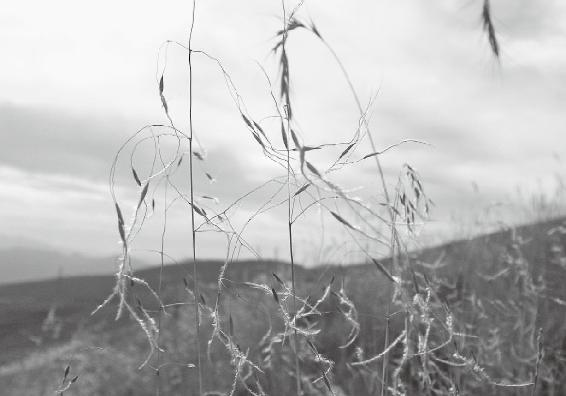
冬天得病易伤肾，夏天得病易伤心
徐文兵：“为冬病在阴，夏病在阳”这句话不大好理解——冬天得的病，容易伤得比较深，容易伤到肾。肾本来是阴，它又在下边，是阴中之阴，所以冬天生病容易伤到肾。
冬天一定要闭藏，一定要养精蓄锐，不要轻易地漏精，不要去出汗，不要去冬泳。因为冬病容易伤到你的阴。夏病在阳，说的是夏天主心，心是阴中之阳。夏天容易热，容易出汗，容易伤到自己的心，所以有些人觉得胸闷喘不上来气。
冬天一定要闭藏，一定要养精蓄锐，不要轻易地漏精，不要去出汗，不要去冬泳。
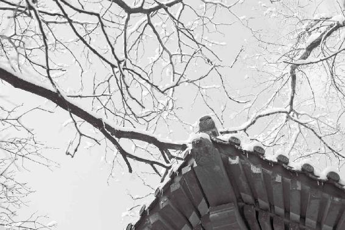
冬 天一定要闭藏。
春天得病易伤肝，秋天得病易伤肺
梁冬： “春病在阴，秋病在阳”是什么意思？
徐文兵：春病在阴。这个阴就是指肝，肝是阴中之阳。所以，春天容易伤到肝；秋病在阳。肺是华盖，属于阴，但是它在身体的上面。所以，秋病容易伤到肺。
冬夏秋春分别会伤到肾、伤到心、伤到肺、伤到肝。怎么调治呢？每个臓对应着它的腑，每个臓又有它的经络。这时候，我的针扎不到你的心上、肝上，但是我可以刺激你的经络，通过调整经络取得一种阴阳的平衡。
冬夏秋春分别会伤到肾，伤到心，伤到肺，伤到肝。怎么调治呢？我的针扎不到你的心上、肝上，但是我可以刺激你的经络，通过调整经络取得一种阴阳的平衡。
臟和腑是一一对应的，但是腑有六个，臟有五个。心有两个意思：心胞和心。
梁冬：所以，所谓的五臟其实是六个。
徐文兵：六臟六腑。最高级别的臟是无形的存在，藏的是神。
什么叫“针砭时弊”
徐文兵：施针石是什么意思呢？
梁冬：针，是指针灸、针刺，灸是艾灸吧？
徐文兵：艾灸。
梁冬：石指的是砭石吧？
徐文兵：没错。有句话叫针砭时弊。砭是什么东西？《异法方宜论》里面讲东、南、西、北的水土不同，人们的饮食不同，生活习惯不同，感受的天地之气不同，所以得的病也不一样，治疗方法也不一样。砭石是治东边的人得的病。东边大概就是现在的山东、渤海一带。他们常吃海产品，鱼生火、肉生痰，所以容易身上长疮、疖子、臃肿、化脓。脓熟了以后，就需要将脓包挑破，排脓。这需要一个锋利的切割器。在原始社会，原始人把石器打磨得特别锋利，拿那个东西做手术刀，用以排脓放血。所以，“故砭石者，亦从东方来”。砭石是中国东部地区发展起来的。
砭石是很锋利的石刀。电影情节里有“打架”的场面——“咵”一下把啤酒瓶底子一敲，留出来那种极端锋利的东西——砭石！以前，有的农村人被毒蛇咬了，需要切疮排脓、放血，他们就把那瓷碗，“咵”掰碎，瓷碗那个茬儿露出来了，极端锋利，用它割破肉，一放血，便可以杀菌消毒，这都是砭石。为什么叫“针砭时弊”，就是时弊需要“拿砭石最锋利的地方刺一刀”，用这种痛苦的方法去解決。
为什么叫“针砭时弊”，就是时弊需要“拿砭石最锋利的地方刺一刀”，用这种痛苦的方法去解決。
有些病要用针石调理，有些病要用艾灸
梁冬：下面接着讲“皆视其所在为施针石也”。
徐文兵：举个例子，比如说，冬病在阴，当寒气深入到人的体内，伤了人的肾气，经常有两种表现：一个是冻疮，一个是静脉曲张。
当寒气深入到人的体内，伤了人的肾气，经常有两种表现：一个是冻疮，一个是静脉曲张。
我调治过几个老人，他们在冬天去趟那种结冰碴儿的水，被冰水一激，体内的气血人为地、本能地收缩。结果，他们的下肢静脉曲张得特别厉害，鼓了起来，就像一条条特别粗的小蛇一样。这就是冬天的寒气伤到了人的阴血的表现。
梁冬：通常出现这种情况，该怎么办呢？
徐文兵：“视其所在，为施针石也。”要调治这种严重的静脉曲张，中医古代的方法是放血，先看患者疮口大小，然后顺着经络的方向放血。现在这种放血疗法基本上失传了，但还有一种技术叫小针刀，也是古代这种砭石切割方法。
伏羲制过九针。以前的针不是我们现在用的这种细的针，有的像把小刀一样锋利，就是形状不一样。比如说，我们的肌肉有粘连，有条索纤维化，就需要把那个粘连部分切开，是一种先创伤再修复的过程。所以，出现严重的静脉曲张这种冬病就用放血疗法，把恶血、黑血放出去以后，把寒气泄掉，局部就能恢复到正常。
夏病在阳——出现了心病以后，“诸痛痒疮皆属于心”——身上会出现红肿热疼的病，现在叫蜂窝组织炎，或者叫葡萄球菌感染，就是人的身上出现疔、疮、疖、肿的症状。
梁冬：红斑狼疮算不算？
徐文兵：红斑狼疮是另外一种病，属于免疫系统疾病，是自身分泌一种细胞来杀自己。痈、肿、疔、疮是体内一种热毒，通过皮肤外泄出来，医者要因势利导，等脓快熟的时候，切开、排脓、引流，然后伤口自然就愈合了，这也是“视其所在，为施针石”。
现在针砭的方法逐渐被西方的手术取代了，但是中医认识得比较深刻，知道有些东西在没成熟之前是不能切的，不是不分青红皂白都要切，包括体內一些癌症或者细胞。
有些东西在没成熟之前是不能切的，不是不分青红皂白都要切，包括体內一些癌症或者细胞。
我们老百姓都知道，有些疔疮如果在没成熟之前就去碰它，会把它惹恼，惹恼以后它就会变成淋巴管炎或者是局部的丹毒，所以我们要观察它成熟的情况。
有些癌症患者没做手术之前好好的，做完手术以后，癌细胞就全身转移了，跟惹恼了一样。中医的外科技术 “匪夷所思”，不是一般人的智力所能理解的，可惜就是逐渐被淹没、失传了。
阳气不足、神不守舍的人去西藏后回来都有各种各样的问题
梁冬：广州有个很著名的杂志主编给我打电话说，上个月他跑到西藏去晒太阳，回到广州后，突然发生了许多很奇怪、很不顺的事情——先是身上长带状疱疹，消下去之后又长出了疝气。我认为这两个事情肯定是一种原因引起的。
带状疱疹和疝气都属于肝经的病。
徐文兵：带状疱疹和疝气都属于肝经的病。带状疱疹，老百姓叫“缠腰龙”，我调治过好几例。表面上看，它是一种火热的、剧烈的疼痛，其中有个病人带状疱疹长在眼睛里——肝开窍于目嘛，它是沿着神经纤维的走向分布的，一般都是跟中医的肝、胆经相对的。另外，带状疱疹如果发在脸上，不及时调治还会引起面瘫。
梁冬：那个朋友去西藏是不是伤到了肝呢？
徐文兵：那就很难说了。现在人有点失魂落魄，不知道到处在寻找什么，可能在寻找自己失落的什么东西，很多人都千里迢迢跑到西藏。一般人就会遇到两个问題：一个是高原反应，再一个就是强烈的紫外线辐射。
现在人有点失魂落魄，不知道到处在寻找什么，可能在寻找自己失落的什么东西，很多人都千里迢迢跑到西藏。一般人就会遇到两个问題：一个是高原反应，再一个就是强烈的紫外线辐射。
梁冬：我听说，有些自身阳气不足、神不守舍的人去西藏，回来之后都有各种各样的问题。
有些自身阳气不足、神不守舍的人去西藏，回来之后都有各种各样的问题。
徐文兵：因为西藏的水土、饮食等很多因素跟他不适应，四处乱跑，最后闹出一身病来。调治带状疱疹，其一，要解肝经的热毒，用一句话来讲叫“火欲发之”。因为肝属于木，肝经就好像一个干柴火堆，慢慢就着了。而柴火堆着了火，有两个办法，一个是拿水给它浇灭。可是这些人，肾水本身不足，浇不灭它。与其那样，不如“火欲发之”。
举个例子，森林着火以后，森林警察怎么灭火？先打隔离墙，然后每人拿一台鼓风机把火吹灭。强烈的空气流动一下带走了火的热量，让火苗低于燃点，自然就灭了。身体里面的火也是这样，要用一些辛涼解表的药，把肝经里面淤结的毒火散出去。这样做带状疱疹就发出来了。
身体里面的火也是这样，要用一些辛涼解表的药，把肝经里面淤结的毒火散出去。
小肠疝气是怎么回事？中医讲的疝气都是肝所主筋的附着、固定肌肉的力量弱了，于是一截小肠就从腹皮中蹦出来了，所以古代的中医治疗疝气，很多是不用手术的，除非出现了嵌顿、坏死。中医用调肝的药来治疗疝气，因为病根儿还在肝上。你那位朋友表现出来的很多奇奇怪怪的症状，按中医的理论分析，都是跟肝有关的。
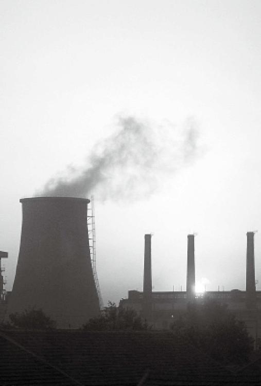
现代人活着累，其实是犯了根本性错误，一股脑往前冲，却没注意到大方向是错的。
现代人都在“拼命挤上了泰坦尼克号的头等舱……”
徐文兵：什么叫“治病求本”？比如用三棱针放血。小孩一高烧就会出现那种39℃、40℃，高热惊厥，有的小孩开始抽风，还有的会出现神智昏迷。这时候，你摸摸他的胳膊，冰凉！怎么办呢？这就是我们讲的要“和”了。热的地方太热，这叫同。
他的手脚冰涼不热，我们可以让他热一下。该怎么办？捋胳膊。沿着这个手少阴——就是手臂的内侧，往下捋，捋到手温乎了，手指头有点血色了，再拿三棱针一点，这可以叫“视其所在，为施针石”，那个热马上就能退下来，包括扁桃体的脓肿都能退下来。
梁冬：我觉得应该给年轻的父母上一些这样的课，要不然他们大半夜去妇幼儿医院，多着急呀。
徐文兵：古人讲“为人父母者不知医为不慈，为人儿女者不知医为不孝”。现在一说孝敬父母，买两盒这金、那金，回去给爹妈了；一说关心孩子，就缺这缺那，其实家长是缺心眼。学医，不见得让你变成医生，你要学的不一定是医术，而是医道。知道大方向，你就不会犯那种愚蠢、根本性的错误，不会开着奔驰往沟里跑。现在都知道这个术的层面，大方向老闹错。
古人讲“为人父母者不知医为不慈，为人儿女者不知医为不孝”。
学医，不见得让你变成医生，你要学的不一定是医术，而是医道。知道大方向，你就不会犯那种愚蠢、根本性的错误，不会开着奔驰往沟里跑。
梁冬：用伯凡的话来说，就是“拼命挤上了泰坦尼克号的头等舱……”。
徐文兵：拼命挤，还打破头。
世上没有一招能够包治百病
梁冬：前面讲到了“皆视其所在，为施针石也”。石，是指砭石，可以切割，现在已经失传了。
徐文兵：现在，我看有些中医，遗失的一些传统的技术和文化，又开始有所恢复。比如说刮痧，刮痧其实也是砭石的一种。它是用一种比较软一点、比较圆润的石头刮。
梁冬：砭石不仅是指锋利的石头是吧？
徐文兵：锋利的石头是切割用的，你要刮痧就要用软一点的东西。记得小时候姥姥给我刮痧，用五分的那个钢崩儿刮——沾点水或沾点油，便开始刮。
这个刮痧，大家不要乱用。人家一说，艾灸好，所有人都去艾灸，其实阴虚火旺的人是不适合做艾灸的。一说，所有人刮痧可治百病，其实，那种没有热毒，没有特别强烈的瘀血在里面的人，不适合刮痧。
阴虚火旺的人是不适合做艾灸的。没有热毒，没有特别强烈的瘀血在里面的人，不适合刮痧。
现在每个人都强调自己，我一招鲜，能吃遍天，包治百病。中医是讲“异法方宜”的，不同的病、不同的症，用不同的方法调治。东方人得病用砭石调治；西方的人得病用药调治，就是我们口服的汤药；南方人得病用针灸；北方人得病用艾灸。中原人 “食杂而不劳”，可以做导引按跷——活动、宣达、畅通自己的肢体，让自己吃那么多的好东西消化掉。
所以，中医讲求“异法方宜”——不同的人、不同的病、不同的地域，要用不同的方法调治。刮痧，一定要因势利导，那种毒火或者热毒快出来的时候，你引它一下，让它出来得更利索。
中医讲求“异法方宜”——不同的人、不同的病、不同的地域，要用不同的方法调治。
拿市场经济去发展医疗产业和教育产业，最后会把人害了
徐文兵：一次，我们去杭州天目山采药。采药的时候，我们的一个队员嗓子疼。他自认为受了热邪，就吃了点那种清热解毒的凉药，而且，他觉得热就吹了空调，然后嗓子疼起来了，但这是一种假热、不是那种真热。
结果，吃完这点儿清热解毒的药后嗓子越疼，然后就开始坐在那儿发呆、不想吃东西，有点烧起来了，还没等我动手给这位队员治病，他发痧了！当地人管中暑叫“发痧”，原因就是外面受了热，里面又受了寒，这种矛盾统一了起来。
发痧了怎么去治？这时，我们住的那个旅馆的老板说，我们这儿调治发痧很简单，就是揪痧，揪大椎。这个人真是热心肠，还没等我拿针，人家就上去，两个指头一对，就在大椎穴上“啪”一下，揪过去，那种紫的血印就出来了。我一看，对了，然后连揪了10下，我们那个队员马上神清气爽。
调治发痧很简单，就是揪痧，揪大椎。
梁冬：西方有位管理学大师叫彼得·德鲁克，他说，教育和医疗是两个最重要的，不能用市场逻辑来推导的部分。
教育和医疗是两个最重要的，不能用市场逻辑来推导的部分。
徐文兵：我跟他有同感，我说过，中国有两个职业是凭良心去做的，你拿再细的管理，定再细的法律，也管不了——一个是医生，另一个是老师。正如德鲁克所说，这是市场覆盖不了的。如果拿市场经济去发展这种医疗产业和教育产业，最后就把人害了。
中国有两个职业是凭良心去做的，你拿再细的管理，定再细的法律，也管不了它——一个是医生，另一个是老师。
大椎穴，去热毒功德无量
梁冬：“背为阳，阳中之阳，心也；背为阴，阳中之阴，肺也。”
徐文兵：前边讲的那个队员，就是被人揪这个大椎穴揪好的，而我们用针刺，清热解毒泄火的能力也特别强。
大椎穴在我们第七颈椎的棘突的下方，当你一弯脖子，后面顶起一个高高的骨头的下方，就是大椎穴。它是手上的三阳经——手阳明大肠、手少阳三、手太阳小肠经和督派汇聚的地方，它们的阳气都聚在那儿。
你想去掉身体里面多余的阳气，就在大椎那儿扎针或者刮痧，去泄气，然后去放血，泄掉血中那种热毒。你看那个店主的手法很快——两个指头一并，“呱呱”一揪，热毒就一下出来了。热毒出来，就不影响你的心、不往里面走了。这就叫“火郁发之”，给他散出来。
你想去掉身体里面多余的阳气，就在大椎那儿扎针或者刮痧，去泄气，然后去放血，泄掉血中那种热毒。
梁冬：是不是满脸青春痘、暗疮的人揪一揪，也有助于排出毒来呢？
徐文兵：满脸青春痘、暗疮的人不是真正的阳火，而是阴火，就是那个龙雷之火——性激素的火被挑起来了。不能用这种方法。
满脸青春痘、暗疮的人不是真正的阳火，而是阴火，就是那个龙雷之火——性激素的火被挑起来了。
背部为阳，阳中之阳是心，阳中之阴是肺
梁冬：前面讲到“阳中之阳和阳中之阴”。“阳中之阳”指的是心，“阳中之阴”指的是肺。
徐文兵：五臟里面居于胸腔的三个臟，是阴中之阳。对比肝肾来讲，位于胸腔里面的三个臟器还能分。
徐文兵：背的上半部是阳，背的下半部是阴。而背的上半部里面有三个臟器：心、心胞和肺。那么，这三者之中谁是阴，谁是阳？“阳中之阳，心也”，心叫“手少阴”，肺叫手太阴。究竟谁阴？
梁冬：那肯定是太阴。
徐文兵：对，太阴，肺。就是说，肺跟心相比就属阴。这都是相对的阴阳。分阴阳的时候，你一定要知道在跟谁比，参照物是谁。
分阴阳的时候，你一定要知道在跟谁比，参照物是谁。
腹部为阴，阴中之阴是肾，阴中之阳是肝，阴中之至阴是脾
徐文兵：下面说腹为阴，在腹腔里面也有臟器，肾臟、肝臟、脾臟。在这三者中，谁阴谁阳？阴阳是个关系，离开了关系，就别说阴阳。
梁冬：先前，很多人习惯性地认为，阴好像是某个物质。腹为阴，但阴中还得细分，腹腔里面有肝、脾，还有肾，刚才还讲到脾是“阴中之至阴”。
徐文兵：脾属土。
梁冬：脾是属于中和的吗？是阳和阴之间的皇天后土。
徐文兵：有人说，中医就是诡辩，其实不是诡辩，中医讲任何话都有上下文，有参照物。腹部有三个臟器，一个是肾，叫足少阴肾，它是藏精的；肝是藏血的，还是定期的，比如女性定期要来例假，它藏血还要往出放的。男人的肾藏精，也会定期放点儿。所以，肝是阴也有阳，但是肝在五行里面属于木，有生发之性，跟肾相比，肝就是阴中之阳。
肝是藏血的，还是定期的，比如女性定期要来例假，它藏血还要往出放的。
肾主水，水曰润下，它往下流，是阴中之阴。
脾属于收，就是把六腑消化转化的营养统统纳入囊中，包括那些半消化、没消化的东西。好多人血脂高、血糖高、痛风、尿酸高，其实就是六腑不好好干活，没把东西化好，没把活干好。结果，一些藏污纳垢的事都让脾吸收进去了。吸收到体内不是精，而是浊，搞得人就发病了。所以，我们给脾起个名字，叫“阴中之至阴”。
好多人血脂高、血糖高、痛风、尿酸高，其实就是六腑不好好干活，没把东西化好，没把活干好。结果，一些藏污纳垢的事都让脾吸收进去了。吸收到体内不是精，而是浊，搞得人就发病了。
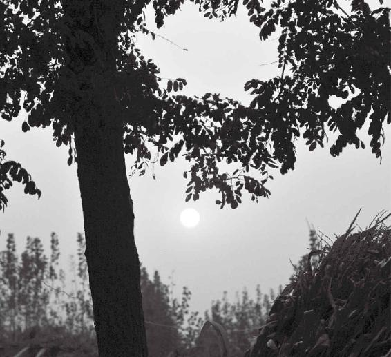
有时候你以为自己吸收的是精，其实是浊。
人体的阴阳、表里、内外、雌雄都是同气相求，同声相应的
徐文兵：这段话之前，黄帝的老师把我们身体里面的五臟六腑归了类，之后有一句话说：此皆阴阳表里，内外雌雄，相输应也。其实，他讲的都是阴阳。阴对着里、对着内、对着雌，阳对着表，对着外，对着雄。它们是相输应的。
“输”是什么意思？我们讲腧穴的时候说过，腧穴就是臟腑体内的气输送到体表。阴阳表里有一个互相的感应——同气相求，同声相应，所以 “输”跟我们讲的腧穴的“腧”是同义词。“应”的繁体字“應”带一个“心”字底，意为呼应、对应。
“阴阳表里，内外雌雄，相输应也”就是说，当阳气出来的时候，所有跟它同一属性的东西都会跟着动，这是不以人的意志为转移的。所以，天亮以后，健康人在早晨5点到7点间先去大便，因为5点到7点是对应大肠的时间。然后，7点到9点肚子会饿。这其实就是人的阳气跟外面的气呼应了。
“阴阳表里，内外雌雄，相输应也”就是说，当阳气出来的时候，所有跟它同一属性的东西都会跟着动，这是不以人的意志为转移的。
可是阴阳颠倒的人早晨起来要么不上厕所，要么就是五更泻，有一个表现尤其特殊：早晨7点到9点这些人肚子不饿。为什么？昨天吃了没消化——一个原因是昨天吃得太多了，另一个就是昨天虽然没吃多，但是胃肠不蠕动。他们的阳气变成阴的了，跟自然的阳气就不输应、不共振、不共鸣。
但是早晨胃里面还没排空，还存有一肚子东西，贤惠的媳妇和热心的老妈又把牛奶鸡蛋端上来了。“你得吃早饭。”“我不想吃。”“不吃早饭容易得什么什么病……”有些人从来不问问这个人饥不饥、饿不饿。所以，这种输应是天地之气呼应的。
我们每次到山上采药，一到九、十点钟，就困得不得了，而且在天上能看见星星。而在大城市这种灯红酒绿的环境里，越到晚上十来点钟，越兴奋，莫名的兴奋——我要去泡吧，要给朋友打电话吃夜宵，这是被一种邪气煽动起来了。所以，我们认识到，先把天地归类，再把自然、人体归类，然后去一一对应。对应了以后就和谐了，这样的话，人才活得舒服。一旦不和、不谐，人就要得病。
我们认识到，先把天地归类，再把自然、人体归类，然后去一一对应。对应了以后就和谐了，这样的话，人活得舒服，自然也舒服。一旦不和、不谐，人就要得病。
梁冬：这就好比拿一块磁铁石隔着一张纸去挥舞，可以看见上边有些东西在跳动，你所看到的那个景象，其实就是阴阳之间的互动互应。其实它是个“应”，但是那种磁铁、磁场的传达场或者力，你看不见。
比如说，当一个盘子里放着铁屑，你如何将它们排成有序的？底下放个磁铁，它本身有场我们管它叫“神”。只要轻轻触动一下那个盘子，给它一个震动，所有的铁屑就会按磁力线排好。
徐文兵：这是人在聪明地利用天然的力量。其实我们身体里面也有这样一个场。医生的作用就是在恰当的地方给一个恰当的力，其实就像一只小蝴蝶扇一下翅膀，然后它再恢复到这个状态。当你在足三里扎了一针，就相当于南美的蝴蝶振动了一下翅膀，你知道会引起反应了，会引起你整个胃的蠕动。昨天吃的东西又开始消化了，觉得饿了。中医认识到这种关系，而且知道怎么利用。这就是人的聪明才智建立在自然的基础上。
现在有些人则是把自身的磁场屏蔽掉，然后再去排铁屑，真的是费力不讨好。
梁冬：这个例子太精辟了。很多人看不到有形的连接，就认为人的身体和外界没关系，其实显然是有的。
很多人看不到有形的连接，就认为人的身体和外界没关系，其实显然是有的。
徐文兵：人体的表面好像没有关系，但无时不刻都存在着一种关系。
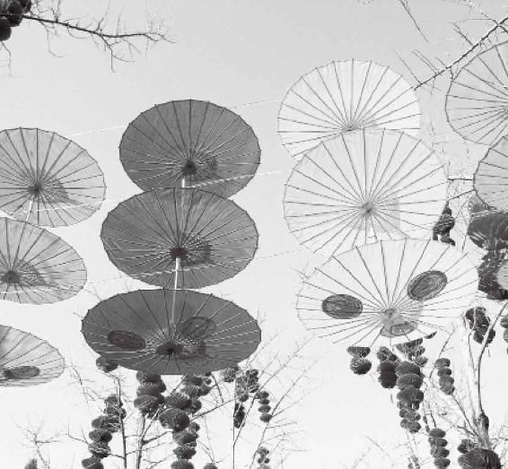
很 多东西表面看着不觉得，其实它们互相关联。
如果人知道什么叫匪夷所思，就会变得谦卑一点儿
梁冬：如果你相信一见钟情，就了解了在茫茫人海中，有一些人你第一次见就觉得特别顺眼，而另一些人你就会觉得特别讨厌，这绝对是有一种超越物质的东西连接的。
如果你相信一见钟情，就了解了。在茫茫人海中，有一些人你第一次见就觉得特别顺眼，而另一些人你就会觉得特别讨厌，这绝对是有一种超越物质的东西连接的。
徐文兵：超过你的意识。如果你知道匪夷所思，就会变得谦卑一点儿。很多东西不是你能想象到的，不是你的智力水平能达到的，哪怕使劲想，也想不通。这得开慧，得去修身养性。开慧以后，你突然会觉得原来匪夷所思的东西，猛然明白了。
梁冬：这个东西你不需要想明白，它本来就在那儿，只是你收不到。
徐文兵：后天强迫的意识太刻意了，把你先天那种共振——与自然共振的本能的频率破坏了。
我们为什么现在天黑了不睡、天亮了不想起……
徐文兵：有的人不了解什么叫共振，就会闹笑话。古代有一个故事：在一座庙里，有一个挂钟总是在半夜莫名其妙地响，没人敲它自己就会响。庙里的住持特别害怕，认为在闹鬼，结果来了一个人说能捉鬼，住持就摆下酒宴好好招待了他。其实，这个人就是拿个小挫刀在那挂钟上挫了几下，改变了那挂钟的频率，接收不到无形的空气中传来的波和振动了，半夜里这挂钟便再也不响了。
我们现在做的很多事，就相当于拿个小挫刀在挫自己，破坏了我们与生俱来的，与天地共振的频率。
我们现在做的很多事，就相当于拿个小挫刀在挫自己，破坏了我们与生俱来的、与天地共振的频率。小孩子玩个什么东西，哪怕撒泡尿、和点泥也特別高兴，因为他跟天地同步，是纯阳之体。一到晚上，八、九点钟困了，人就睡了。
现在，我们把自己那个频率破坏了，结果闹成天黑了不睡、天亮了不起，春天没有斗志，冬天反而想与天斗、与地斗，最后 “唯求速死，生不如死”。
现在，我们把自己那个频率破坏了，结果闹成天黑了不睡、天亮了不起，春天没有斗志，冬天反而想与天斗、与地斗，最后 “唯求速死，生不如死”。
我们现在做的很多事，是自己在伤害自己。
生命如何才能叫天天灵，叫地地应
梁冬：说到 “故以应天之阴阳也”，我觉得这句话特别精辟。关于这句话还有什么补充吗？
徐文兵：“应”这个词用得特别好。什么叫“不应”？叫天天不灵，叫地地不应。我理解的“应”是一种“回应”——你到山谷里叫一声：“啊！我来啦！”那山谷里就会回应：“啊啊啊，我来啦！”
有个回声。这叫回应，这个“应”就是当你跟上天地变化的点以后，出现的一种状况，叫“应”了。我们经常说，叫你的时候“答应”一声，吩咐个事“应”一声。不应的话，你心里就会没着落的。有时候想一件事、做一件事的时候，突然觉得这个事如你所愿，它就“应”了。
有时候想一件事、做一件事的时候，突然觉得这个事如你所愿，它就“应”了。
现在人最可怕的就是“不应”和“逆”
徐文兵：《黄帝内经》里有一个重要的篇章叫《阴阳应象大论》。比如，“天亮了”是阳，你就去“应”那个象，该起床了；天黑了，是阴，你去应它的象，去睡觉。“春生、夏长、秋收、冬藏”，这就叫“应”。
现在很多人都是：第一“不应”，天亮了我不起；第二是“逆”，这是最可怕的。越到晚上越折腾，越到阴中之阴的时候越折腾。
现在很多人都是：第一“不应”。天亮了我不起；第二是“逆”，这是最可怕的。
认识了身体的这种阴阳表里、内外雌雄的变化以后，就要去做跟它一样的事情。比如说 “雌雄”的问题，“雄兔脚扑朔，雌兔眼迷离”。怎么分辨兔子的公和母？那好办，我拎起来看呗——一看这人就没品位。
认识了身体的这种阴阳表里、内外雌雄的变化以后，就要去做跟它一样的事情。
真正的哲学是举一反三，通过一个表象，然后归到一个类别里面就知道了其中的道理。 就是说，“见一落叶而知秋”“尝一脔肉而知一鑊之味、一鼎之调”，这都是通哲学的人，有“慧”的人。
真正的哲学是举一反三，通过一个表象，然后归到一个类别里面就知道了其中的道理。 就是说，“见一落叶而知秋”“尝一脔肉而知一鑊之味、一鼎之调”，这都是通哲学的人，有“慧”的人。
“雄兔脚扑朔，雌兔眼迷离”就是说，当两个兔子在安静的时候，雄和雌的表现不一样。雄兔子就在那里“扑棱扑棱”老乱动，雌兔子静若处子——眼睛迷迷离离的，又像睡又像没睡，就在那儿待着。这种情况下就能分出它是雄还是雌。 “双兔傍地走，安能辨我是雄雌？”当兔子一块儿跑起来的时候，都处于阳的状态的时候，就不知道哪个是公的，哪个是母的了。这其实是“花木兰”自圆其说的词，就是说，当不打仗的时候，我穿着女装，荆钗布裙，在家里做饭织布；男人在田里耕地干活。而打起仗来的时候，我巾帼不让须眉，比你们男人还勇猛，“关山度若飞”。
这就是类比。
现在人活得是越来越浅薄、越来越直白了
徐文兵：古人说话特别储蓄，他的意思就是让读书的人去想，在读书的同时，让人同时发展了智力和慧力。现在人活得是越来越浅薄、越来越直白了，恨不能就是“你直接告诉我得了”。
现在人活得是越来越浅薄、越来越直白了，恨不能就是“你直接告诉我得了”。
比如说学习《黄帝内经》，好多人说：“你直接给我翻译成白话文不就可以嘛，让我一看。”我说，翻译成白话文可以，但是你那种思想境界提高了吗？你没有任何改变。好比那个电脑软件，即使你输入了一些数据，也不能提高软件的级别。古代人教书是既要输入数据，又要提高你的软件级别。
古人有几句诗：天下文章属浙江，浙江文章属我乡，我乡文章属我弟，我给我弟改文章。什么意思？我是天下文章第一高手。现在人想表达这个意思，写出来就是“老子天下第一”！那四句诗通篇没有一句话是说“我天下第一”，但是连在一块儿看就会让读书人得出个结论：哦，这个人天下文章第一！谁得到了升华？谁得到了锻炼？想提高自己的慧力、智力的话，还是去读文言文，还是去读《黄帝内经》的原版。这样，你不但明白了文中的意思，同时自身素质也得到了提高——它给你留下了足够的想象空间，而这种想象的自由是一个人精神上最大的愉悦。
现在都是浅薄的人攻击深奥的人——以前人说看电影，你看那道具多逼真，但它再逼真也是假的呀，与其是假还不如来一个真假。比如，京剧里面挥个马鞭子就代表“我骑了一匹马”，留给观众的是无限想象的空间，你可以想象这匹马什么样儿。但如果等想象落实到实处以后，就会觉得特没劲。所以，中国的文化艺术都是高度抽象的艺术，是给一些有智力、有慧力的人看的。
中国的文化艺术都是高度抽象的艺术，是给一些有智力、有慧力的人看的。
梁冬：所以，西方照相术发明之后才发展出了印象派。
徐文兵：先发展到一定阶段，突然觉得没劲了。
梁冬：实际上，中国的写意派早已经达到这个境界了。
徐文兵：直接通神。所以，我们一定要学会应天地之阴阳表现的象。
人再牛，也牛不过自然
梁冬：这个天人相应之阴阳，以前人都一直批评中医说“一来就搞天人相应、天地人和”，但其实这个东西好像又说不清楚。
徐文兵：讲中医基础理论课的时候，会讲中医哲学。而中医哲学里面有一部分内容专门讲“天人相应”。
什么是“天人相应”？古代人认为人和所处的自然界有千丝万缕的联系，而且这种联系匪夷所思。所以，古代有一个“天人相应派”。他们把天上星象的变化，包括地势的变化，比如洪水、地震等变化和人间的事情联系起来。比如1976年，天上掉陨石，地下大地震，有一些名人就在之后的回忆录中感慨地说：古代的天人相应派早就知道天上往下掉星星或者是地上出现地震，其实都是跟人间的变化有联系的。
古代有一个“天人相应派”。他们把天上星象的变化，包括地势的变化，比如洪水、地震等变化和人间的事情联系起来。
不要想着和自然斗，太傻了。
现在有些人认为这不过叫“劫难”，说，你要认为它跟什么人间的变化有联系的话，你拿出证据来，证明到底有什么联系。其实，从科学的态度来研究它、理解它的话，我们只能说存疑待考。总有一天会发现它们之间有一些联系，只不过我们现在的智力或者是慧力联想不到。起码当这些事情发生以后会对人有一种警示，就是说，你人再牛，也牛不过自然！当自然出现了一些异常的变化以后，我们是不是就可以借这个力量反思一下我们的所作所为，我们的系统、组织或者社会是不是出了些什么问题，需要赶紧调整一下。这实际上是一种尊重自然学派的态度。
人再牛，也牛不过自然。当自然出现了一些异常的变化以后，我们是不是就可以借这个力量反思一下我们的所作所为，我们的系统、组织或者社会是不是出了些什么问题，需要赶紧调整一下。
另外一种学派就是与天斗、与地斗、与人斗，其乐无穷。他不认为这有什么关系，他也不认为这些东西对他有什么警示。比如，在宋朝的时候，王安石变法就是加速宋朝衰亡的大手笔，他其实就是杀鸡取卵，通过临时的变法，好像短时间内国库充盈了，但是也把民间的那种活力、创造力扼杀掉了。所以，很多像司马光、苏东坡的一些人都反对他。他们借着当时宋朝出现的地震、洪水等天灾来证明，王安石的变法是不对的。但王安石这个人是死硬分子，就是属于脖项非常僵的人。他很有辩才，他说：“你们说尧、舜、禹的时代是不是我们理想中的社会？儒家从来都把上古尧舜禹看成理想状态，可是尧、舜、禹的时代天灾人祸有多少？大禹为什么治水？不是因为发大水吗？难道发大水，就说大禹无德吗？”一下把司马光和苏东坡的嘴堵回去了。这是发生在历史上的故事。
我个人认为，尊重自然，顺应自然比较好。我反对转基因食品。转基因食品的害处要远远大于那些化肥农药，这是典型的胆大妄为。我又听说英国科学家已经人造出精子了。中医和道家认为：人老想做超越自然、超越他自己的事情，最后做的结果就是把自己干掉。
人老想做超越自然、超越他自己的事情，最后做的结果就是把自己干掉。
现在国家规定的政策就是你出产什么豆类豆油，是不是转基因，要写清楚。而西方很多团体和组织都在促进立法，不让商人销售转基因食品的，可是这些人把东西卖到中国来了，中国人不知道。外国拿拉丁文、英文标注是转基因食品，中国人怎么知道？好在目前很多豆油都标注了，说明是不是转基因的。
转基因的东西都是在改变自然，然后没准就把人改变了。
转基因的东西都是在改变自然，然后没准就把人改变了。所以，这个天人相应派，从根上捯，出在《金匮真言论》的这一句话，人一定要“以应天之阴阳也”。
天之阴阳表现在四季和昼夜，比如日食。日食都出现在阴历初一。初一是看不见月亮的，它在太阳那儿，所以日食发生的可能性就是在初一，而月食发生的可能性在十五。
中国的古人对日食、月食都有明确记载。所以，现在考古往前推时间，说是公元哪年哪年发生什么事情，都靠日食的记载。殷墟出的那些甲骨文，记载的主要内容都是祭祀、天文、星象，只不过我们缺乏古代人那种对星象敏锐的感觉能力。
人们都说，古埃及、古希腊建筑起来的天文台，一到冬至那天，太阳光就会从某个特定角度射进来。中国也有，在山西运城一带，尧的遗址，有古天文台观象台，而巫山就是古代的巫观测星象的观星台。
我将来有个心愿，就是好好地把天文学研究一下，然后“以应天之阴阳也”。